Mélange stœchiométrique
Un mélange est stœchiométrique si les quantités initiales des réactifs sont dans les proportions des nombres stœchiométriques des réactifs. Ainsi, pour la réaction d'équation :
Exemple d'application
Isomérie Z/E
Un composé de formule A−CH=CH−B, où A et B ne sont pas des atomes d'hydrogène, présente deux isomères notés Z (substituants prioritaires du même côté) et E (substituants prioritaires de part et d'autre de la double liaison).
Z ou E ?


Liaisons conjuguées & couleur
Des doubles liaisons séparées par une liaison simple sont dites conjuguées. Les molécules d'espèces organiques colorées présentent souvent de nombreuses liaisons conjuguées : la couleur d'une solution résulte de la superposition des radiations non absorbées de la lumière blanche.
Compter les liaisons conjuguées

Liaison hydrogène
Une liaison hydrogène se forme lorsqu'un atome H, alors lié à un atome A très électronégatif, interagit avec un atome B, lui aussi très électronégatif et porteur d'un doublet non liant. A et B peuvent être le fluor F, l'oxygène O, l'azote N, le chlore Cl…
Les molécules d'alcools et d'acides carboxyliques peuvent participer à des liaisons hydrogène.

- Chapitre « composition initiale » : mesure de l'absorbance et relation entre l'absorbance et la concentration (déjà proportionnelle !).
- Chapitre « Évolution d'un système chimique » et TP sur le titrage : un titrage permet de déterminer une concentration inconnue en faisant réagir l'espèce titrée avec un réactif titrant.
Principe de la spectroscopie
Une espèce chimique est susceptible d'interagir avec un rayonnement électromagnétique. L'étude de l'intensité du rayonnement, absorbé ou réémis, en fonction des longueurs d'onde est l'analyse spectrale. La spectroscopie est l'étude quantitative des interactions entre la lumière et la matière.
Dans un spectrophotomètre, on fait passer une radiation électromagnétique à travers une solution. On mesure l'intensité I de la radiation transmise et on la compare à l'intensité I₀ de la radiation incidente ; pour certaines longueurs d'onde, I < I₀ : la solution a absorbé de l'énergie.
Loi de Beer-Lambert
Il faut C < 0,1 mol·L⁻¹ pour éviter la saturation du spectrophotomètre (A > 2 et Itransmis < 1 %) : c'est le domaine de validité de la loi. Si plusieurs espèces colorées sont présentes en solution, leurs absorbances s'additionnent : A = ΣAi = Σεi·l·Ci.
🧪 Activité expérimentale virtuelle — Vérifier la loi de Beer-Lambert
À l'aide du simulateur PhET « Beer's Law Lab » (onglet Beer's Law, pas l'onglet Concentration), tu vas mesurer l'absorbance d'une solution colorée pour différentes concentrations, comme au laboratoire.
- 1Choisis une solution colorée dans le menu déroulant (par exemple le permanganate de potassium KMnO₄, violet).
- 2Clique sur le bouton « λ at max absorbance » pour te placer à la longueur d'onde λmax de l'espèce choisie (justifie sur ton cahier pourquoi on travaille toujours à λmax en pratique).
- 3Fixe la largeur de cuve (cuvette width) à 1 cm et fais varier la concentration C (curseur ou champ numérique) sur 6 à 8 valeurs réparties entre 0 et la valeur maximale.
- 4Pour chaque concentration, relève l'absorbance A affichée par le détecteur et note le couple (C ; A) sur ton cahier.
- 5Complète ci-dessous le programme Python avec tes mesures pour tracer la courbe d'étalonnage A = f(C) et en déduire le coefficient d'absorption molaire ε.
Spectre UV-visible et couleur
Le spectre UV-visible représente l'absorbance en fonction de la longueur d'onde, entre 200 et 800 nm. Il présente une ou plusieurs bandes d'absorption assez larges passant par un maximum d'absorption λmax.
Lorsqu'une espèce chimique n'absorbe que dans un seul domaine de longueurs d'onde du visible, sa couleur perçue est la couleur complémentaire de celle des radiations absorbées (deux couleurs diamétralement opposées sur le cercle chromatique sont complémentaires).
QCM — Analyse spectrale UV-visible
Principe de la spectroscopie IR
La spectroscopie IR repose sur le même principe que la spectroscopie UV-visible, mais dans le domaine de longueur d'onde 2500 – 25000 nm : le rayonnement électromagnétique interagit avec les liaisons covalentes de la molécule. Celle-ci subit alors des mouvements de vibration d'élongation ou de déformation ; certaines liaisons absorbent de l'énergie et changent de fréquence de vibration, faisant apparaître des bandes d'absorption dans le spectre.
L'association des molécules d'alcools par liaison hydrogène provoque la diminution de la valeur du nombre d'onde σ du maximum d'absorption de la liaison O–H et l'élargissement de la bande d'absorption. La liaison O–H étant affaiblie, on a besoin de moins d'énergie pour la faire vibrer ; par conséquent λ est plus longue et σ plus petit.
QCM — Spectroscopie IR
🧪 Activité — Identifier une fonction chimique à partir du spectre IR
À l'aide de l'outil Ostralo « Spectre infrarouge d'une molécule », tu vas comparer les spectres IR de trois molécules de fonctions différentes et en extraire la bande la plus caractéristique de chacune.
- 1Sélectionne un alcool (par exemple le propan-1-ol) : clique sur les liaisons du tableau pour repérer la bande la plus caractéristique de la fonction alcool, et relève son nombre d'onde.
- 2Fais de même avec un acide carboxylique (par exemple l'acide propanoïque).
- 3Fais de même avec un aldéhyde ou une cétone (par exemple le propanal ou la propanone).
- 4Complète les trois lignes ci-dessous à partir de tes observations, puis clique sur « Vérifier ».
Dosage avec un spectrophotomètre
On prépare une gamme étalon de solutions filles, de concentrations C connues, par dilution d'une solution mère. La mesure de l'absorbance A de chaque solution permet de tracer la courbe d'étalonnage A = f(C). Ce graphe est une droite qui passe par l'origine, car d'après la loi de Beer-Lambert, il y a une relation de proportionnalité entre A et C.
- Repérer A₀ sur l'axe des ordonnées et tracer une droite horizontale jusqu'à la courbe d'étalonnage.
- Depuis le point d'intersection, tracer une droite verticale jusqu'à l'axe des abscisses.
- Lire C₀, la concentration cherchée, sur l'axe des abscisses (ou calculer C₀ = A₀ / (ε×l)).
Nouvelle grandeur : la conductivité σ
Les ions présents dans une solution assurent le passage du courant électrique. On exprime la facilité qu'a le courant à circuler à l'aide d'une grandeur appelée conductivité d'une solution, notée σ. Elle est d'autant plus importante que les ions sont mobiles, que leurs concentrations sont élevées, et que la température de la solution est élevée.
La conductivité molaire ionique λ traduit l'aptitude d'un ion à conduire le courant électrique ; elle peut varier avec la température.
🔎 Exploiter la conductivité ionique molaire
La conductivité totale σ se décompose en la somme des contributions de chaque ion présent. Mais tous les ions ne conduisent pas aussi bien le courant : leur conductivité molaire ionique λ peut varier du simple au septuple !
| Ion | H₃O⁺ | HO⁻ | Cl⁻ | K⁺ | Na⁺ | CH₃COO⁻ |
|---|---|---|---|---|---|---|
| λ (mS·m²·mol⁻¹) | 34,98 | 19,8 | 7,63 | 7,35 | 5,01 | 4,09 |
Loi de Kohlrausch
Pour une solution ne contenant qu'un seul soluté suffisamment dilué, on utilise des solutions filles de concentrations C connues (préparées par dilution d'une solution mère). La mesure de la conductivité σ de chaque solution permet de tracer la courbe d'étalonnage σ = f(C), une droite passant par l'origine :
La méthode ne peut être utilisée que pour des solutions suffisamment diluées et ne contenant qu'un seul soluté ionique.
QCM — Dosage par étalonnage conductimétrique
📊 Exemple guidé — dosage d'une solution de chlorure de sodium
On souhaite déterminer la concentration C₀ inconnue d'une solution de chlorure de sodium (Na⁺ + Cl⁻). On prépare 5 solutions étalons par dilution et on mesure leur conductivité σ :
| C (mol·m⁻³) | 2,0 | 4,0 | 6,0 | 8,0 | 10,0 |
|---|---|---|---|---|---|
| σ (mS·m⁻¹) | 25,3 | 50,6 | 75,8 | 101,1 | 126,4 |
La solution inconnue est mesurée à σ₀ = 63,2 mS·m⁻¹.
- Vérifier que σ = f(C) est bien une droite passant par l'origine (loi de Kohlrausch).
- Calculer la pente k à partir de deux points de mesure : k = Δσ / ΔC.
- Utiliser σ₀ = k × C₀ pour calculer C₀.
Exercice 1 — calcul de σ à partir des ions présents
Exercice 2 — déterminer une concentration à partir d'un étalonnage
Vocabulaire du titrage
Réaliser un titrage, c'est déterminer une quantité de matière ou une concentration à l'aide d'une méthode qui met en jeu une réaction chimique appelée réaction support de titrage. Cette réaction doit être totale, rapide et unique.
Un titrage nécessite une solution titrée (contenant le réactif dont la concentration est à déterminer) et une solution titrante (contenant le réactif de concentration connue, ajoutée généralement à l'aide d'une burette graduée).
- On introduit progressivement le réactif titrant B dans le bécher contenant la solution du réactif titré A, de volume VA.
- Au début du titrage, B est entièrement consommé par A dont la quantité de matière diminue progressivement : B est le réactif limitant.
- À un moment donné, tout le réactif A est consommé : les deux réactifs sont alors introduits dans les proportions stœchiométriques. C'est l'équivalence.
- Si on continue à verser B, il devient en excès (A est déjà entièrement consommé) : A devient le réactif limitant.
L'équivalence correspond donc au changement de réactif limitant.
Volume équivalent VE
Le volume équivalent VE est le volume de solution titrante qu'il faut ajouter à la solution titrée pour que le réactif titrant et le réactif titré soient dans les proportions stœchiométriques de la réaction support de titrage.
Exercice — TP dosage de l'acide chlorhydrique
🧪 Activité — Simuler un titrage avec l'application Hatier-clic
Cette application interactive te permet de réaliser un titrage virtuellement, comme au laboratoire : choix des réactifs, ajout progressif du réactif titrant à la burette, repérage de l'équivalence.
- 1Prends d'abord en main l'application (identifie la burette, le bécher contenant la solution titrée, et le dispositif de suivi proposé).
- 2Ajoute progressivement le réactif titrant et observe l'évolution de la grandeur suivie (pH, conductivité ou couleur selon l'activité proposée).
- 3Repère le volume équivalent VE à l'aide de la méthode adaptée à la grandeur suivie.
- 4Utilise la relation à l'équivalence (CA·VA/a = CB·VE/b) pour déterminer la concentration ou la quantité de matière demandée par l'activité.
Titrage suivi par conductimétrie
Un titrage conductimétrique est envisageable quand la réaction support fait intervenir des ions ; il consiste au suivi de l'évolution de la conductivité de la solution titrée pour chaque ajout de volume V de solution titrante. La courbe σ = f(V) présente un point de rupture de pente qui permet de repérer l'équivalence.

💻 Programme à compléter — Simuler la courbe de titrage conductimétrique
L'objectif de cet exercice est de tracer la courbe de titrage conductimétrique σ = f(V) simulée par un programme Python, pour le titrage de HCl (VA = 20,0 mL) par NaOH (cB = 0,10 mol·L⁻¹). Il faut d'abord obtenir les quantités de matière des 4 ions impliqués (H₃O⁺, Cl⁻, Na⁺, HO⁻), avant et après l'équivalence.
Titrage suivi par pH-métrie
Un titrage pH-métrique est envisageable quand la réaction support est une réaction acide-base ; il consiste au suivi de l'évolution du pH de la solution titrée pour chaque ajout de volume V de solution titrante. La brusque variation de pH de la courbe pH = f(V) permet de repérer l'équivalence, soit par la méthode des tangentes parallèles, soit par la méthode de la courbe dérivée (le maximum de |dpH/dV| correspond à VE).
💻 Programme à compléter — Simuler la courbe de titrage pH-métrique
Même principe que pour la conductimétrie : on calcule, pour chaque volume V de NaOH versé, la quantité de matière d'ion H₃O⁺ restant (avant l'équivalence) ou d'ion HO⁻ en excès (après l'équivalence), pour en déduire le pH.
Titrage suivi par colorimétrie
Lors d'un titrage colorimétrique, un changement de couleur du milieu réactionnel permet de repérer l'équivalence. Ce repérage peut être facilité par l'utilisation d'un indicateur coloré acido-basique : un couple acide-base dont les deux espèces n'ont pas la même couleur. Pour être utilisable lors d'un titrage, il faut que sa zone de virage (donc son pKa) soit comprise dans le saut de pH.

🧪 Choisis ton système et ton indicateur
| Indicateur | Zone de virage (pH) | Teinte acide | Teinte basique |
|---|---|---|---|
| Hélianthine | 3,1 – 4,4 | Rouge | Jaune |
| Bleu de bromothymol (BBT) | 6,0 – 7,6 | Jaune | Bleu |
| Phénolphtaléine | 8,2 – 10,0 | Incolore | Rose fuchsia |
💻 Programme à compléter — Déterminer le volume de virage d'un indicateur
Contrairement à la conductimétrie ou la pH-métrie, il n'y a pas de courbe à tracer ici : l'objectif du programme est de calculer, pour l'indicateur choisi, l'intervalle de volumes de solution titrante pour lequel le pH du mélange est compris dans sa zone de virage — c'est cet intervalle qui correspond au changement de couleur observé.
zone_min et zone_max pour tester un autre indicateur (hélianthine : 3,1–4,4 ; BBT : 6,0–7,6), et observe comment l'intervalle de virage se déplace — ou disparaît si l'indicateur n'est pas adapté !S'entraîner avec le simulateur de titrage (Hatier-clic)
Ce simulateur propose 14 activités de titrage couvrant les trois méthodes de suivi (conductimétrique, pH-métrique, colorimétrique), à partir de contextes concrets (vinaigre, eau de mer, produits ménagers...).
| # | Activité | Méthode de suivi |
|---|---|---|
| 1 | Titrage colorimétrique de l'acide oxalique (échauffement) | Colorimétrique |
| 14 | Incertitude | Colorimétrique |
| 2 | Pourcentage massique d'acide lactique | pH-métrique |
| 4 | Titrage d'un produit ménager | pH-métrique |
| 11 | Contrôle qualité d'un déboucheur de canalisation | pH-métrique |
| 3 | Titrage d'une solution d'hydroxyde de sodium | Conductimétrique |
| 5 | Salinité d'une eau de mer | Conductimétrique |
| 6 | Titrage de l'acide éthanoïque | Conductimétrique |
| 7 | Ions sulfate dans une eau minérale | Conductimétrique |
| 8 | Courbes de titrage conductimétrique | Conductimétrique |
| 12 | Vérification du degré d'acidité du vinaigre | Conductimétrique |
| 9 | Titrages d'un vinaigre ⭐ (protocole détaillé ci-dessous) | pH-métrique + Colorimétrique |
| 10 | Ammoniac dans un détachant | pH-métrique + Colorimétrique |
| 13 | Conditions expérimentales (concentration titrante, volume prélevé) | Méthodologie |
⭐ Protocole approfondi — Activité 9 : Titrages d'un vinaigre
Contexte : on titre V = 10,0 mL d'un vinaigre commercial dilué 20 fois (solution S′) par une solution d'hydroxyde de sodium de concentration c = 5,00×10⁻² mol·L⁻¹.
Réalise le titrage sur le simulateur et détermine les coordonnées du point équivalent.
À la demi-équivalence (V = VE1/2), le pH du mélange est égal au pKa du couple acide éthanoïque / ion éthanoate. Place le curseur à cette valeur de V et relève le pH correspondant.
D'après la zone de virage de cet indicateur (8,2 à 10,0) et la courbe de titrage, à quel intervalle de volumes de solution titrante correspond le virage ?
⭐ Protocole approfondi — Activité 14 : Incertitude sur une concentration
Contexte : on titre V₁ = 5,00 mL d'une solution d'acide chlorhydrique de concentration inconnue c₁ par une solution d'hydroxyde de sodium de concentration c = 5,0×10⁻³ mol·L⁻¹, en présence de BBT.
Réalise le titrage, détermine VE, puis calcule c₁ à partir de la relation à l'équivalence.
| Volume (mL) | 5 | 10 | 20 | 25 | 50 |
|---|---|---|---|---|---|
| u(V) (mL) | 0,015 | 0,020 | 0,030 | 0,030 | 0,050 |
Pour V₁ = 5,00 mL, u(V₁) = 0,015 mL (lecture directe dans le tableau). Pour VE (lu à la burette), estime toi-même une incertitude-type raisonnable à partir de la précision de graduation du simulateur.
🔗 Activité numérique — Déterminer la configuration Z ou E
Pour chaque molécule proposée, détermine le substituant prioritaire (règle CIP) sur chaque carbone de la double liaison, puis conclus si la molécule est Z ou E. La priorité et la configuration sont recalculées par l'algorithme à chaque molécule.
Sur le carbone de gauche, quel est le substituant prioritaire ?
Sur le carbone de droite, quel est le substituant prioritaire ?
D'après ces deux priorités, la molécule est-elle Z ou E ?
🔗 Activité numérique — Repérer les liaisons conjuguées et prédire la couleur
Pour chaque molécule proposée, repère sur l'écriture topologique le nombre de doubles liaisons conjuguées (séparées deux à deux par une seule liaison simple), puis prédis si la substance est colorée ou incolore. Le nombre de liaisons conjuguées est recalculé par l'algorithme à chaque molécule.
Combien de doubles liaisons conjuguées compte cette molécule ?
D'après ce résultat, penses-tu que cette molécule est colorée ou incolore ?
📋 Activité documentaire — Étude de spectres UV/visible
Capacité exigible : exploiter, à partir de données tabulées, un spectre d'absorption UV-visible pour identifier un groupe caractéristique ou une espèce chimique.
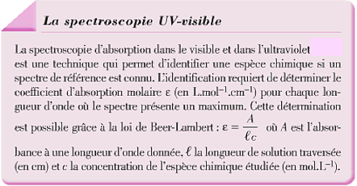
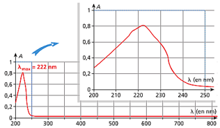
1. Décrire le spectre de l'isoprène.
2. Quelle est la dimension de ε ?
3. Calculer ε en L·mol⁻¹·cm⁻¹ puis en dm²·mol⁻¹.
4. Déterminer si le maximum d'absorption λmax est dans l'UV ou dans le visible. La molécule est-elle colorée ? Justifier.
5. Quelle serait la valeur de λmax pour une solution de couleur verte ? Justifier.
6. Calculer les valeurs de l'absorbance aux longueurs d'onde 200, 210, 220, 230 et 240 nm pour un échantillon 2 fois plus dilué. Tracer l'allure du spectre de cet échantillon dilué.
7. Parmi les spectres d'autres échantillons, déterminer celui qui pourrait correspondre à celui de l'isoprène. Justifier.
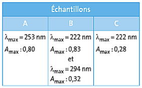
📋 Activité documentaire — Étude de spectres infrarouges
- Exploiter, à partir de données tabulées, un spectre d'absorption infrarouge ou UV-visible pour identifier un groupe caractéristique ou une espèce chimique.
- Exploiter des règles de nomenclature pour nommer une espèce chimique ou représenter l'entité associée.
Paul, étudiant en stage dans un laboratoire de chimie, doit réaliser l'oxydation du butan-2-ol en butanone mais n'a aucune idée de la durée de cette transformation.
Il se demande au bout de combien de temps le butan-2-ol, réactif limitant dans les conditions choisies, a disparu. Pour le savoir, son tuteur lui conseille d'effectuer des prélèvements du mélange réactionnel à différentes dates et de réaliser les spectres infrarouge (IR) correspondants.
Paul effectue deux prélèvements du mélange réactionnel ; un au bout de 40 minutes, puis un autre au bout de 1h 30 minutes et demande à la technicienne du laboratoire de réaliser les spectres IR de chaque prélèvement.
N'ayant aucune connaissance en IR, il essaye, en analysant plusieurs spectres IR différents, de trouver une ressemblance entre les spectres.
Comment pouvez-vous aider Paul à conclure si la transformation est terminée à la date de chacun des prélèvements ?
| Liaison | Nombre d'onde (cm⁻¹) |
|---|---|
| O-H alcool libre | 3590-3650 |
| O-H alcool lié | 3200-3600 (large) |
| O-H acide carboxylique | 2500-3200 (large) |
| Ctét-H | 2850-2970 |
| C=O aldéhyde et cétone | 1700-1740 |
| Ctri-H aldéhyde | 2700-2900 |
| C=O acide carboxylique | 1700-1725 |
| C=O ester | 1735-1750 |
| N-H amine | 3300-3500 (1 ou 2 bandes) |
| N-H amide | 3100-3500 |
| C=O amide | 1650-1700 |
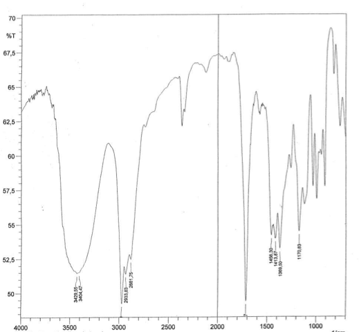
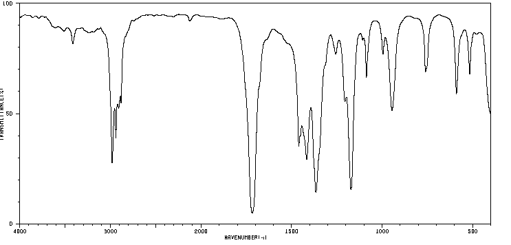
Étape 1 : Écrire la formule topologique des espèces chimiques proposées dans le document 1, donner le nom de la fonction et entourer le groupe caractéristique correspondant.
Étape 2 : Entourer les bandes caractéristiques sur les spectres IR du document 1 et identifier les liaisons correspondantes en vous appuyant sur le document 2.
Étape 3 : Sur les spectres IR du document 3, entourer les bandes caractéristiques, identifier les liaisons correspondantes et les groupes caractéristiques présents ; en déduire les familles correspondantes.
Étape 4 : Conclure sur la date de fin de réaction.
Pour chaque molécule proposée : en ordonnées, la transmittance (en %) ; en abscisses, le nombre d'onde (en cm⁻¹).
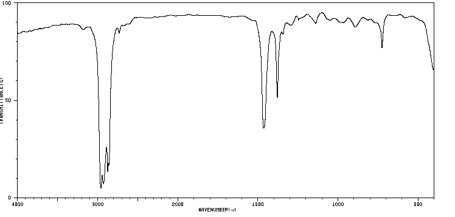
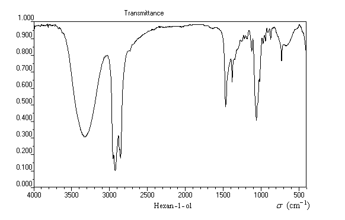
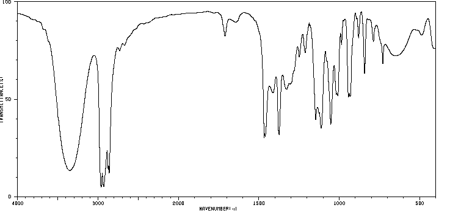
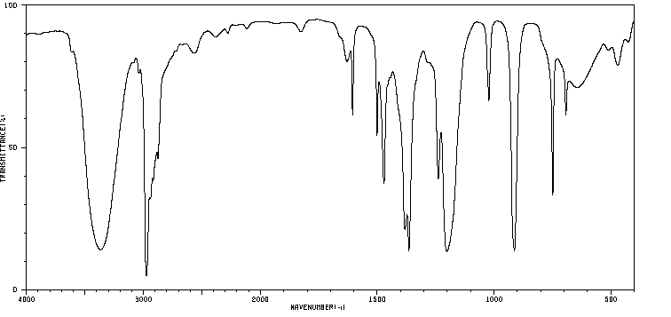
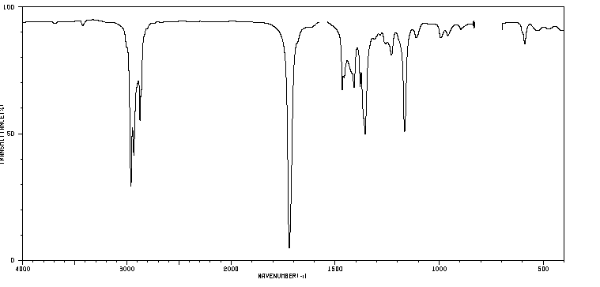

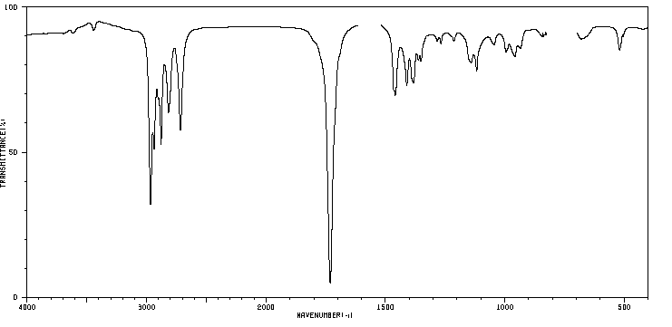
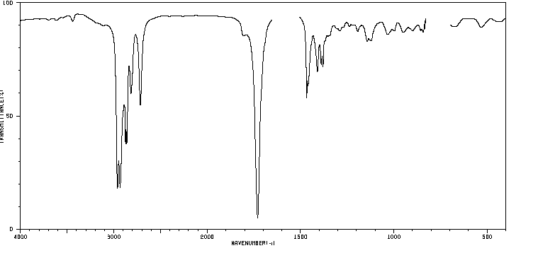
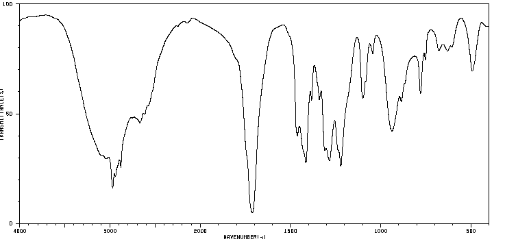
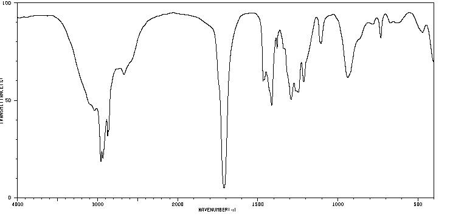
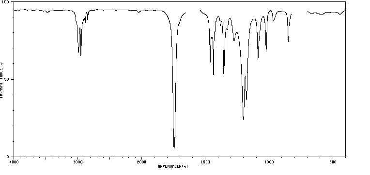
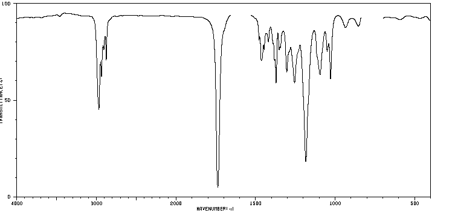
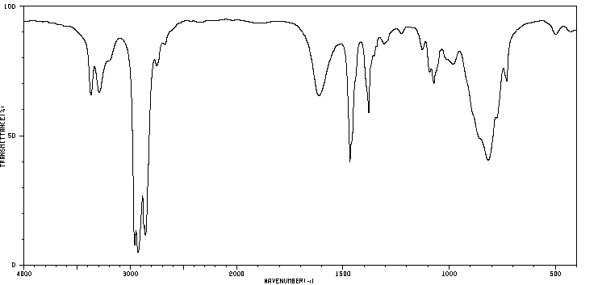
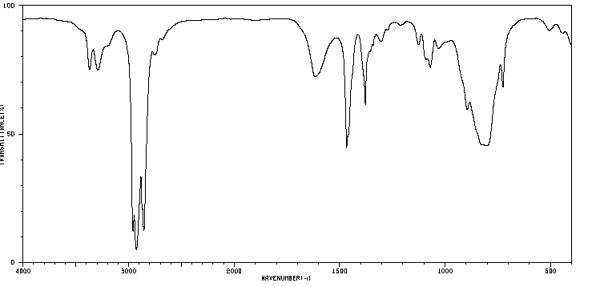
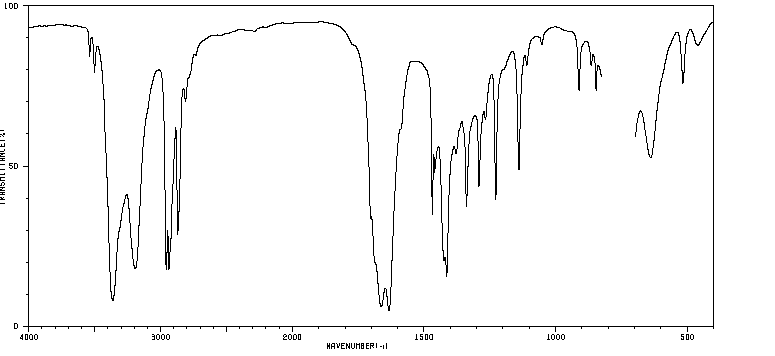
📋 Activité documentaire — Un blue-jean vieux de 6 000 ans
Jusqu'en 2016, les archéologues pensaient que les Égyptiens de la Ve dynastie, il y a 4 500 ans, étaient les premiers à avoir utilisé l'indigo, un pigment bleu qui colore aujourd'hui les blue-jeans. Ils ont alors découvert, sous une colline de la côte Nord du Pérou, des fragments de tissus en coton âgé de 6 000 ans et les ont analysés à la recherche d'indigo.
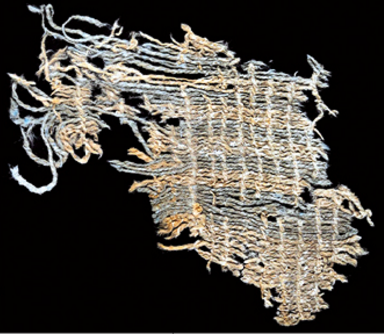
Comment identifier les pigments utilisés pour teindre ces tissus péruviens ?
L'indigo et l'indirubine sont deux pigments généralement extraits à partir des mêmes plantes, comme l'indigotier en Amérique du Sud. Selon leurs proportions dans une même solution, des nuances de teintes variant du bleu au violet peuvent être obtenues.
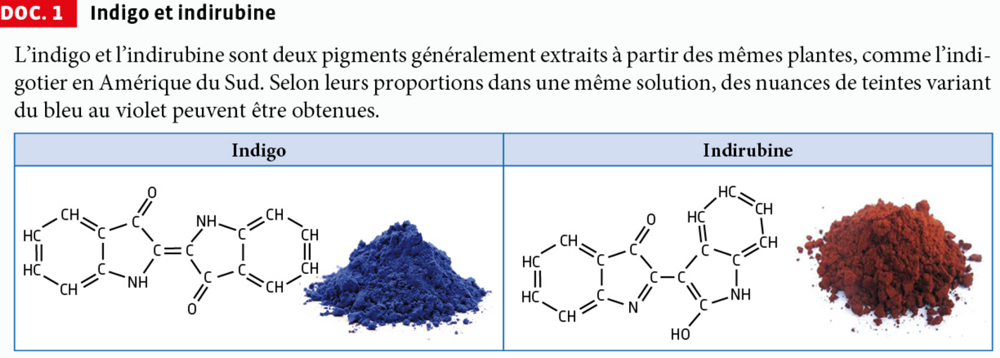
Le spectre de référence ci-dessous a été réalisé à l'aide d'une solution d'indigo synthétique.
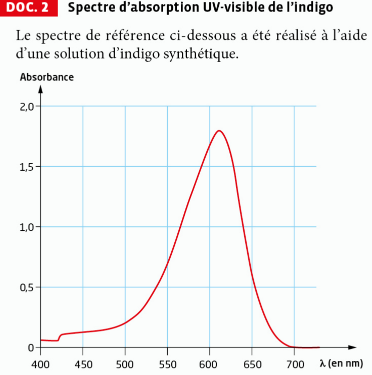
La couleur bleue était à peine visible sur les fragments de tissu. Après extraction, les deux espèces chimiques présentes dans l'étoffe ont pu être séparées par une technique spéciale de chromatographie. Les échantillons A et B de ces deux espèces chimiques différentes ont ensuite été analysés en vue d'identifier l'éventuelle présence, entre autres, des pigments indigo et indirubine. Les résultats obtenus pour l'analyse par spectrophotométrie UV-visible et IR de ces deux échantillons sont présentés ci-dessous.
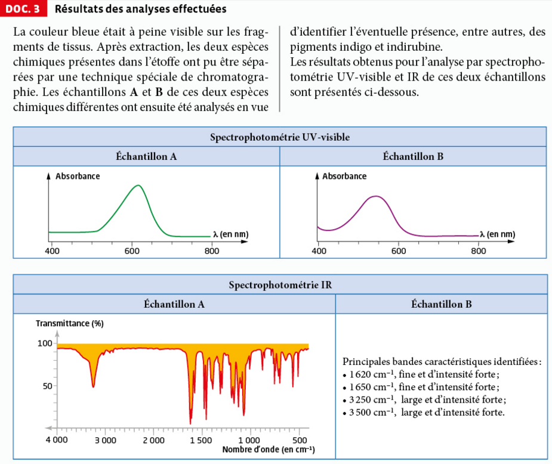
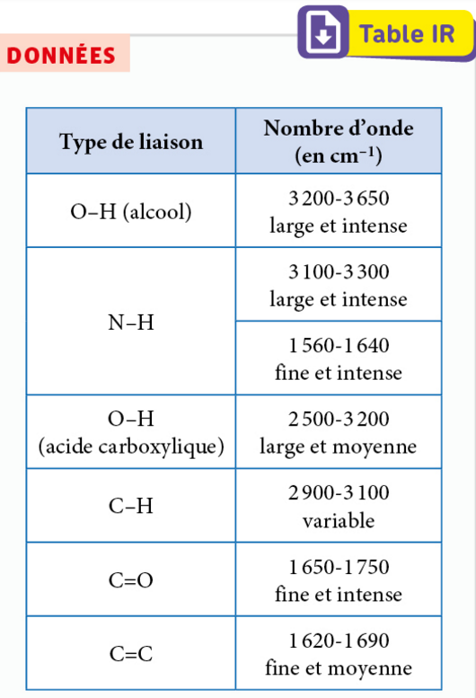
📎 Table de données spectroscopiques IR complète (PDF, ressource complémentaire)
1. S'approprier — Comparer les groupes caractéristiques présents dans les espèces chimiques indigo et indirubine.
2. Analyser/Raisonner
a. Expliquer si la comparaison des spectres UV-visible obtenus expérimentalement (doc. 3) permet de faire l'hypothèse que l'un de ces échantillons est de l'indigo.
b. Indiquer la couleur de la solution obtenue avec l'autre échantillon. Préciser alors si l'on peut savoir s'il s'agit d'indirubine.
3. Valider
a. Valider votre hypothèse d'identification à l'aide du spectre de référence d'une solution d'indigo synthétique (doc. 2).
b. Expliquer en quoi l'analyse des spectres IR des échantillons permet de valider ou d'invalider ces hypothèses.
4. Communiquer GRAND ORAL
Présenter à l'oral, à l'aide d'un support visuel présentant les différents spectres, une réponse à la question posée au début de l'activité mettant en valeur la progressivité de la démarche d'identification des espèces chimiques.
1. L'indigo possède deux groupes caractéristiques C=O associés chacun à un N-H sur le même cycle (deux fonctions amide/lactame), de part et d'autre d'une double liaison C=C centrale conjuguée. L'indirubine ne possède qu'un seul groupe C=O associé à un N-H (une seule fonction amide), et un groupe hydroxyle -OH sur l'autre cycle à la place du second groupe C=O.
2a. Le spectre de l'échantillon A présente un maximum d'absorption vers 610-620 nm, très proche de celui du spectre de référence de l'indigo (document 2, λmax ≈ 610 nm). On peut donc faire l'hypothèse que l'échantillon A est de l'indigo. Le spectre de l'échantillon B présente un maximum différent, vers 550 nm : il ne correspond pas à celui de l'indigo.
2b. L'échantillon B absorbe principalement vers 550 nm, dans le vert : la couleur transmise (complémentaire) est donc le rouge-violacé (magenta), ce qui est cohérent avec la couleur rouge de l'indirubine en poudre (document 1). Cependant, on ne dispose pas de spectre de référence de l'indirubine pour comparer précisément la position du maximum d'absorption : le spectre UV-visible seul ne permet donc pas de confirmer avec certitude qu'il s'agit d'indirubine.
3a. Le spectre de référence de l'indigo synthétique (document 2) et le spectre expérimental de l'échantillon A ont la même allure générale et un maximum d'absorption situé à la même longueur d'onde (environ 610 nm). Cette correspondance valide l'hypothèse : l'échantillon A est bien de l'indigo.
3b. Pour l'échantillon B, la table de données indique que la bande à 3 500 cm⁻¹ (large, forte) correspond à une liaison O-H, la bande à 3 250 cm⁻¹ (large, forte) à une liaison N-H, et les bandes à 1 650 cm⁻¹ et 1 620 cm⁻¹ (fines, fortes) à des liaisons C=O et C=C/N-H. La présence d'une bande O-H, absente dans la structure de l'indigo mais caractéristique de l'indirubine, valide l'hypothèse que l'échantillon B est de l'indirubine. Pour l'échantillon A, l'absence attendue d'une large bande O-H et la présence de bandes N-H et C=O cohérentes avec deux fonctions amide confirment qu'il s'agit bien d'indigo, qui ne possède pas de groupe hydroxyle.
4. Une présentation orale réussie suit la progressivité de la démarche : observation initiale (couleur à peine visible sur le tissu), formulation d'une hypothèse grâce à la spectrophotométrie UV-visible (comparaison des λmax), puis validation croisée grâce aux spectres IR (présence ou absence du groupe O-H), pour conclure sur la nature des pigments utilisés par les teinturiers péruviens il y a 6 000 ans.
🧪 Activité expérimentale — Dosage par étalonnage du permanganate de potassium
- Mesurer une conductivité et tracer une courbe d'étalonnage pour déterminer une concentration.
- Réaliser une solution de concentration donnée en soluté apporté à partir d'une solution de titre massique et de densité fournis.
Problématique : on cherche à déterminer la concentration massique d'une solution de permanganate de potassium à l'aide de deux méthodes.
On conclura en indiquant si les deux méthodes d'analyse donnent des résultats cohérents et celle qui semble la plus fiable.
On dispose des solutions suivantes :
- S : la solution de permanganate de potassium de concentration massique inconnue CS.
- S0 : une solution de permanganate de potassium de concentration massique C₀ = 0,20 g·L⁻¹, nécessaire à la préparation de l'échelle d'étalonnage.
Matériel mis à votre disposition : cellule de conductimétrie, conductimètre, cuves UV ; spectrophotomètre ; béchers ; fioles jaugées de 100 mL ; pipettes jaugées de 5 mL, 10 mL, 20 mL.
Le cristal de Condy se présente sous forme de cristaux en paillettes de couleur violette ; il est soluble dans l'eau où il produit des solutions qui vont du rose au violet sombre suivant sa concentration. C'est un sel de manganèse de formule KMnO₄, de masse molaire 158 g·mol⁻¹, composé d'un cation potassium K⁺ et d'un anion permanganate MnO₄⁻.
Pictogrammes associés au permanganate de potassium :
Un conductimètre mesure la conductivité σ d'une solution. La conductivité reflète l'aptitude d'une solution à conduire le courant électrique. La loi de Kohlrausch indique que la conductivité σ est proportionnelle à la concentration molaire en soluté apporté c : σ = k × c.
Le spectrophotomètre mesure l'absorbance d'une solution pour une lumière monochromatique de longueur d'onde choisie. La loi de Beer-Lambert indique que l'absorbance A est proportionnelle à la concentration de l'espèce colorée c : A = k × c.
Q1. Pourquoi peut-on envisager de doser cette solution par spectrophotométrie ?
Q2. Pourquoi peut-on envisager de doser cette solution par conductimétrie ?
Q3. Pourquoi faut-il diluer la solution S avant de réaliser les dosages, et que faut-il construire à partir des solutions diluées ?
Q4. Pour chaque solution de la gamme d'étalonnage, quelles grandeurs faut-il connaître, mesurer ou calculer ?
Q5. Décrire le protocole expérimental permettant de préparer une solution fille par dilution à partir de la solution mère S₀.
Q6. Quelle relation permet de calculer le volume Vm de solution mère à prélever pour obtenir un volume Vf de solution fille de concentration Cf donnée ?
Q7. Quel critère utilise-t-on pour choisir la longueur d'onde de travail au spectrophotomètre ?
Q8. Quelle relation mathématique attend-on entre l'absorbance A et la concentration C, et quelle espèce chimique est responsable de cette absorbance ?
Q9. Quelle relation mathématique attend-on entre la conductivité σ et la concentration C, et quelles espèces chimiques sont responsables de cette conductivité ?
Q10. Comment déterminer la concentration CS de la solution S à partir de la mesure de son absorbance AS (ou de sa conductivité σS) et de la modélisation obtenue ?
Q11. Les deux méthodes donnent-elles des résultats cohérents ? Quelle méthode semble la plus fiable ? Justifier.
🧪 Activité expérimentale — Dosage par titrage acido-basique de l'acide chlorhydrique
- Mettre en œuvre le suivi pH-métrique d'un titrage ayant pour support une réaction acide-base.
- Mettre en œuvre le suivi conductimétrique d'un titrage.
Problématique : retrouver Ca, concentration inconnue d'une solution d'acide chlorhydrique.
Matériel mis à votre disposition : conductimètre et sa cellule de conductimétrie, pH-mètre et sa sonde. Béchers, erlenmeyer ; éprouvette graduée de 250 mL ; burette ; système d'agitation ; pipette jaugée de 10 mL.
Produits mis à votre disposition : indicateurs colorés de fin de réaction : BBT, hélianthine et phénolphtaléine. On dispose d'une solution de soude à une concentration Cb = 7,5×10⁻² mol·L⁻¹.
➢ Titrer ou doser une solution consiste à déterminer la concentration de l'espèce chimique dans cette solution. On utilise pour cela une solution titrante de concentration connue.
➢ La réaction entre l'espèce titrante et l'espèce titrée doit être totale et rapide.
➢ On dose un acide avec une base forte, et une base avec un acide fort.
➢ Dès que le réactif titré a complètement disparu, on a atteint l'équivalence. À l'équivalence, les réactifs (titré et titrant) ont été introduits dans les proportions stœchiométriques de l'équation. Dans la plupart des titrages, le réactif titrant est placé dans la burette.
Pour un monoacide fort dosé par une solution d'hydroxyde de sodium, l'équation de dosage est : H₃O⁺ + HO⁻(aq) → 2 H₂O(l)
À l'équivalence, on a donc : nE(HO⁻) = n₀(H₃O⁺), avec n₀ la quantité présente dans l'échantillon d'acide et nE la quantité de base versée quand l'équivalence est atteinte.
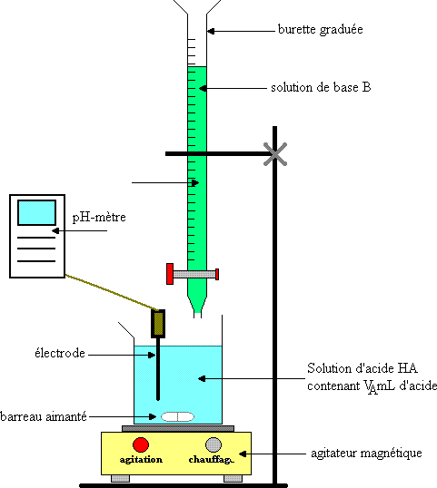
La courbe de titrage pH-métrique donne les variations du pH en fonction du volume V de solution versée. Elle possède un point particulier noté E, appelé point équivalent, où la courbure change (point d'inflexion). Deux méthodes permettent de déterminer ses coordonnées : la méthode des tangentes (figure 1) et la méthode de la courbe dérivée (figure 2), où l'équivalence correspond à l'extremum de la courbe dpH/dV = f(V).
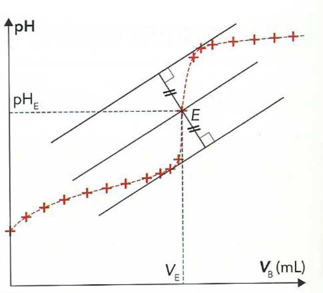
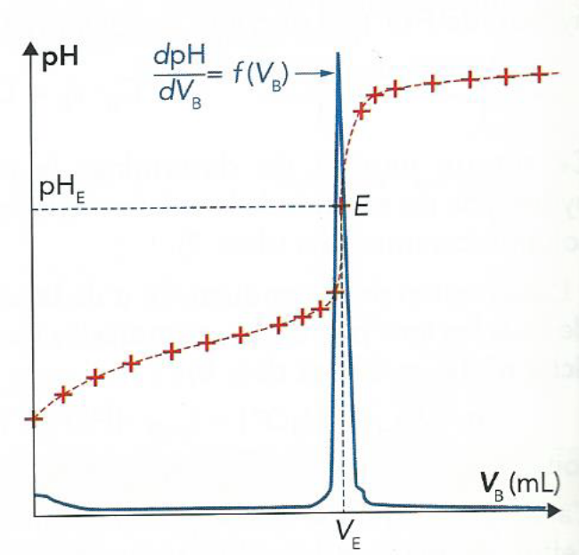
Zones de virage des indicateurs colorés :
- Le BBT vire entre pH 6,0 et 7,5 (pKA = 7,1)
- L'hélianthine vire entre pH 2,4 et 4,4 (pKA = 3,4)
- La phénolphtaléine vire entre pH 8,2 et 9,9 (pKA = 9,1)
Conductivités molaires ioniques à 25 °C :
λ⁰(H₃O⁺) = 35,0×10⁻³ S·m²·mol⁻¹ • λ⁰(HO⁻) = 19,9×10⁻³ S·m²·mol⁻¹ • λ⁰(Cl⁻) = 7,6×10⁻³ S·m²·mol⁻¹ • λ⁰(Na⁺) = 5,0×10⁻³ S·m²·mol⁻¹
I. Titrage par pH-métrie
On réalise le titrage sur un volume Va = 10,0 mL de la solution à doser de concentration Ca. On ajoutera environ 200 mL d'eau distillée dans l'erlenmeyer pour que la sonde utilisée soit immergée dans la solution.
Q1. Pourquoi cet ajout d'eau distillée ne modifie-t-il pas les conditions de l'équivalence ?
Q2. Après avoir tracé la courbe pH = f(Vb versé), comment déterminer le volume à l'équivalence VE1 ?
Q3. En déduire une valeur de la concentration Ca1.
II. Titrage par conductimétrie
On réalise le titrage sur un volume Va = 10,0 mL de la solution à doser de concentration Ca. Ajouter environ 200 mL d'eau distillée dans l'erlenmeyer à l'aide d'une éprouvette graduée.
Q4. Après avoir tracé la courbe σ = f(V versé), justifier l'allure de cette courbe avant et après l'équivalence.
Q5. Que vaut le volume VE2 versé à l'équivalence ? En déduire une valeur de Ca2.
III. Titrage colorimétrique
Règle : un indicateur coloré acido-basique doit avoir sa zone de virage comprise dans le saut de pH de la courbe pH-métrique.
Q6. Parmi les indicateurs colorés proposés (document 3), lequel est le mieux adapté à ce titrage ? Justifier à l'aide de la règle ci-dessus.
Q7. Justifier ce choix en comparant le pKA de l'indicateur choisi à pHE, à l'aide des inégalités pH < pKa − 1 et pH > pKa + 1.
Q8. Pourquoi réalise-t-on systématiquement un titrage colorimétrique après un titrage pH-métrique ou conductimétrique, plutôt que l'inverse ?
🔗 Activité numérique — Modélisation d'un titrage
Un titrage peut être modélisé en utilisant un langage de programmation. On étudie ici le cas général d'une réaction support de titrage A + B → C (A : réactif titré, B : réactif titrant), pouvant s'accompagner d'ions spectateurs. Le tableau ci-dessous instancie ce modèle sur l'exemple du titrage des ions chlorure de l'eau du robinet par précipitation, à l'aide d'une solution de nitrate d'argent (Ag⁺(aq), NO₃⁻(aq)).
Comment les outils numériques permettent-ils de tester l'accord entre modélisation et expérience ?
Les extraits de code Python ci-contre sont issus d'un programme permettant le suivi de la composition d'un système modèle en fonction du volume V de solution titrante B versée.
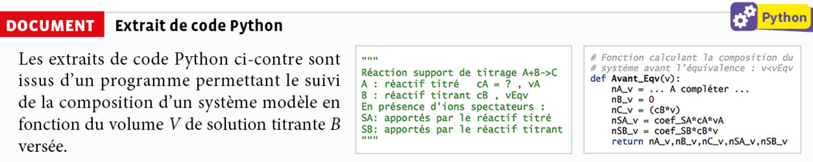
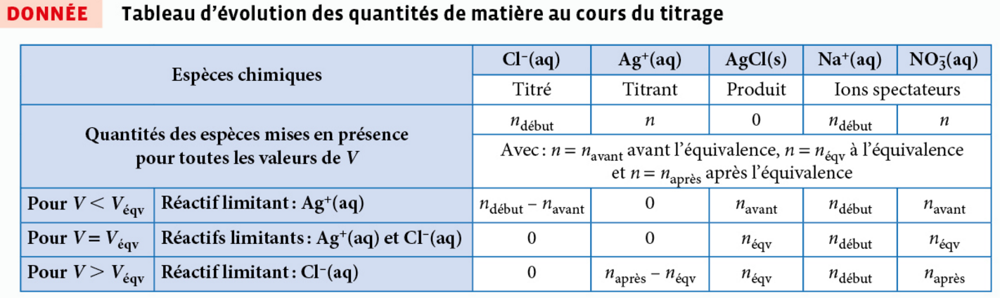
1. Analyser/Raisonner
a. Dans l'exemple du titrage des ions chlorure de l'eau du robinet, à quelle espèce chimique correspond B, le réactif titrant ?
b. Quelle est l'expression correcte de nA_v (quantité de matière de A restante) avant l'équivalence, dans la fonction Avant_Eqv(v) ?
2. Réaliser
a. Compléter le fichier fourni permettant de représenter l'évolution des quantités de matière du système en fonction du volume de solution titrante versée. Le code devra permettre à l'utilisateur de choisir les paramètres de composition du système.
Apres_Eqv(v) par symétrie avec Avant_Eqv(v) : après l'équivalence, c'est B qui est en excès et A qui a totalement disparu. Complète ensuite la boucle for x in v: en appelant la bonne fonction selon que x est inférieur ou supérieur à vEqv, puis les instructions de tracé (une courbe par espèce).b. Exécuter le code avec les paramètres de l'activité expérimentale correspondante afin de vérifier la valeur de la concentration en ion Cl⁻ déterminée par l'expérience. Vérifier l'accord entre les évolutions prévues qualitativement lors de l'étude expérimentale pour les espèces et celles tracées par le code utilisé.
c. Le suivi des quantités de matière au cours du titrage permet d'obtenir par simulation la courbe de la conductivité en fonction du volume de solution titrante ajoutée. Exécuter la suite du programme afin d'obtenir ce tracé.
3. Valider
D'après la comparaison des courbes expérimentale et simulée, que peut-on conclure ?
Choisis ton niveau, complète le code directement dans la zone ci-dessous, puis exécute-le. Les input() du programme s'afficheront sous forme de boîtes de dialogue.
Éditeur (modifie le code ici) :
1a. A = Cl⁻(aq) (titré), B = Ag⁺(aq) (titrant), C = AgCl(s) (produit), SA = Na⁺(aq) (spectateur apporté par le titré), SB = NO₃⁻(aq) (spectateur apporté par le titrant). ndébut est la quantité initiale de A (et de SA) ; navant = cB×v (quantité de B versée, pour v < vEqv) ; néqv = cB×vEqv ; naprès = cB×v (pour v ≥ vEqv).
1b. nA_v = cA*vA - cB*v
2-3. Le code complet et fonctionnel est proposé ci-dessous : exécute-le directement (aucune modification n'est nécessaire) pour obtenir les deux tracés.
Pour valider (Q3), compare la valeur de cA affichée et l'allure des courbes obtenues avec les résultats de l'étude expérimentale : un bon accord confirme la pertinence du modèle A + B → C utilisé.
📎 Fichiers Python téléchargeables : standard · confirmé · corrigé
Exercice 11 : Identifier une espèce
Le spectre UV-visible de référence de la vanilline en milieu basique montre une absorbance maximale Amax = 1,30 pour une longueur d'onde λm = 346 nm. Le spectre d'un échantillon de solution de composition inconnue est donné ci-dessous.
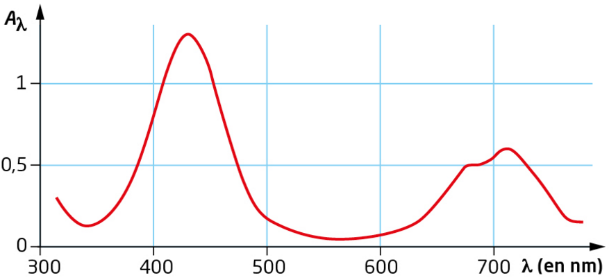
Discuter de la présence ou non de vanilline dans cet échantillon.
Le spectre de l'échantillon présente un maximum d'absorption vers λ ≈ 425 nm (A ≈ 1,3), et non à λm = 346 nm comme attendu pour la vanilline de référence. À 346 nm, l'absorbance de l'échantillon est au contraire proche d'un minimum (environ 0,15), très inférieure à Amax = 1,30.
Le maximum d'absorption caractéristique de la vanilline n'étant pas retrouvé sur le spectre de l'échantillon, on peut conclure à l'absence de vanilline dans cet échantillon. Le maximum observé vers 425 nm correspond à une autre espèce colorée.
Exercice 13 : Calculer une concentration
Une solution d'acide nitrique (H₃O⁺(aq), NO₃⁻(aq)) de titre massique w = 10 % a une densité d = 1,0543.
Données : masse volumique de l'eau ρeau = 1,00 kg·L⁻¹ ; masse molaire de l'acide nitrique HNO₃ : M = 63,0 g·mol⁻¹ ; cm = wsoluté × d × ρeau.
a. Calculer la concentration en masse cm de l'acide nitrique dans la solution.
b. Déterminer sa concentration en quantité d'acide nitrique. En déduire la concentration en quantité d'ion oxonium H₃O⁺.
a. cm = w × d × ρeau = 0,10 × 1,0543 × 1,00 kg·L⁻¹ = 0,1054 kg·L⁻¹, soit cm ≈ 105 g·L⁻¹.
b. c = cm/M = 105,4/63,0 ≈ 1,67 mol·L⁻¹. L'acide nitrique étant un acide fort totalement dissocié dans l'eau, [H₃O⁺] = c ≈ 1,67 mol·L⁻¹.
Exercice 16 : Exploiter des données expérimentales
Le tableau ci-dessous fournit la conductivité de quelques solutions de même concentration en quantité de soluté apporté.
| Solution | Espèces | Conductivité (mS·m⁻¹) |
|---|---|---|
| S₁ | Cu²⁺(aq), SO₄²⁻(aq) | 26,7 |
| S₂ | Cu²⁺(aq), SeO₄²⁻(aq) | 25,9 |
| S₃ | Pb²⁺(aq), SeO₄²⁻(aq) | 29,0 |
Donnée : constante de la sonde conductimétrique k = 1,08 cm⁻¹.
a. Déterminer l'anion puis le cation qui ont la plus grande conductivité ionique molaire.
b. Calculer la conductance mesurée par la sonde conductimétrique pour chacune des solutions.
a. S₁ et S₂ ne diffèrent que par l'anion (même cation Cu²⁺) : σ(S₁) = 26,7 > σ(S₂) = 25,9 mS·m⁻¹, donc SO₄²⁻ a une conductivité ionique molaire plus grande que SeO₄²⁻. S₂ et S₃ ne diffèrent que par le cation (même anion SeO₄²⁻) : σ(S₃) = 29,0 > σ(S₂) = 25,9 mS·m⁻¹, donc Pb²⁺ a une conductivité ionique molaire plus grande que Cu²⁺.
b. D'après σ = k × G, G = σ/k. En exprimant σ en mS·cm⁻¹ (σ(mS·m⁻¹) × 0,01) et k = 1,08 cm⁻¹ :
G₁ = 0,267/1,08 ≈ 0,247 mS (soit environ 247 µS)
G₂ = 0,259/1,08 ≈ 0,240 mS (soit environ 240 µS)
G₃ = 0,290/1,08 ≈ 0,269 mS (soit environ 269 µS)
Exercice 24 : Exploiter une série de mesures
Huit groupes d'élèves ont réalisé un titrage lors d'une séance de TP et noté sur leur feuille de compte-rendu le volume Véqv de réactif titrant versé à l'équivalence.
| Groupe | 1 | 2 | 3 | 4 | 5 | 6 | 7 | 8 |
|---|---|---|---|---|---|---|---|---|
| Véqv (mL) | 12,3 | 11,4 | 12,4 | 12,1 | 11,8 | 11,5 | 12,0 | 11,6 |
a. À l'aide d'une calculatrice ou d'un tableur, déterminer la valeur moyenne V̄éqv et l'incertitude-type u(V̄éqv) du volume versé à l'équivalence.
b. Comparer le résultat obtenu à la valeur de référence Vréf = 12,00 mL attendue. Conclure.
a. La moyenne des 8 valeurs donne V̄éqv ≈ 11,89 mL. L'écart-type des mesures vaut s ≈ 0,37 mL, d'où l'incertitude-type sur la moyenne u(V̄éqv) = s/√8 ≈ 0,13 mL.
b. Écart normalisé : z = |11,89 − 12,00| / 0,13 ≈ 0,86. Comme z < 2, le résultat expérimental V̄éqv ≈ 11,89 ± 0,13 mL est compatible avec la valeur de référence Vréf = 12,00 mL attendue.
Exercice 30 : Identification d'un colorant
Un macaron de masse m = 15 g est lyophilisé puis réduit en poudre dans un mortier. Après solubilisation et filtration sur un entonnoir Büchner, un filtrat de volume V = 25 mL est obtenu. Il contient le colorant présent dans le macaron.
Ce colorant est analysé par spectrophotométrie UV-visible, la longueur de solution traversée par le faisceau lumineux étant la même dans les spectres de référence utilisés.
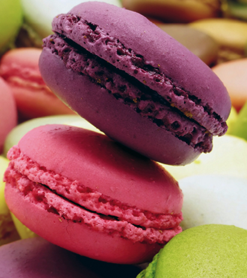
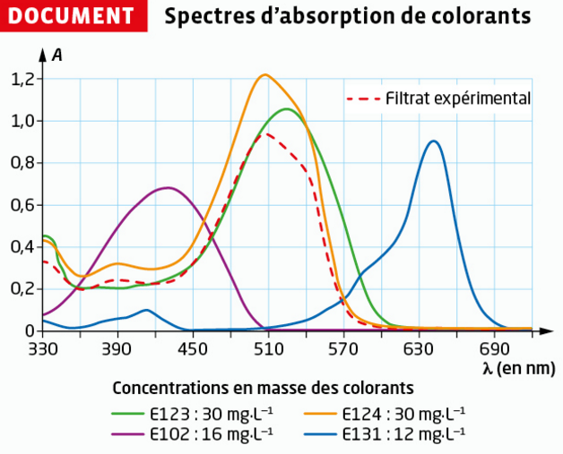
a. Identifier le colorant présent dans le macaron. Justifier.
b. Calculer sa concentration en masse dans le filtrat.
c. Expliquer pourquoi le tracé du quotient A/(ℓ×c) en fonction de la longueur d'onde λ permettrait une identification d'espèce plus précise.
a. Le spectre du filtrat expérimental (pointillés rouges) présente un maximum d'absorption vers λmax ≈ 515 nm, avec une allure de courbe (montée puis descente) qui se superpose à celle du spectre de référence de l'E123 (courbe verte, également maximale vers 515 nm), et non à celles de l'E124 (maximum plus intense et légèrement décalé vers 505 nm), de l'E102 (maximum vers 420 nm) ou de l'E131 (maximum vers 635 nm). Le colorant présent dans le macaron est donc l'E123.
b. Au λmax ≈ 515 nm, on lit Aréférence ≈ 1,05 pour l'E123 à créférence = 30 mg·L⁻¹, et Afiltrat ≈ 0,93 pour le filtrat. Comme la longueur de solution traversée est la même, A ∝ c à λ fixée pour une même espèce, donc :
cfiltrat = créférence × (Afiltrat/Aréférence) = 30 × (0,93/1,05) ≈ 27 mg·L⁻¹
c. Le quotient A/(ℓ×c) est, d'après la loi de Beer-Lambert (A = ε·ℓ·c), égal au coefficient d'absorption molaire ε(λ) : une grandeur qui ne dépend que de l'espèce chimique et de la longueur d'onde, et non de la concentration de la solution ni de la longueur de cuve utilisée. Tracer ε(λ) plutôt que A(λ) élimine donc l'influence des concentrations (souvent différentes) et de la longueur de cuve entre les différents spectres, ce qui rend la comparaison des « signatures » spectrales de chaque espèce plus fiable et l'identification plus précise.
Exercice 32 : Acidité d'un vinaigre
Afin de déterminer la concentration en quantité d'acide éthanoïque CH₃COOH dans un vinaigre, le titrage pH-métrique d'un échantillon de volume VA = 20,0 mL d'un vinaigre dilué au vingtième est effectué par une solution d'hydroxyde de sodium (Na⁺(aq), HO⁻(aq)) de concentration en quantité de matière cB = 0,100 mol·L⁻¹. Le volume à l'équivalence obtenu est : VB,éqv = 10,7 mL.
a. Déterminer la relation entre la quantité de matière nA,début de réactif titré initialement présent dans le bécher et la quantité de matière nB,éqv de réactif titrant introduit à l'équivalence.
b. Exprimer puis calculer la concentration en acide éthanoïque du vinaigre étudié.
a. L'équation de la réaction de titrage s'écrit : CH₃COOH(aq) + HO⁻(aq) → CH₃COO⁻(aq) + H₂O(ℓ). Les réactifs réagissent mole à mole (coefficients stœchiométriques égaux à 1). À l'équivalence, ils sont introduits dans les proportions stœchiométriques, donc nA,début = nB,éqv.
b. nB,éqv = cB × VB,éqv = 0,100 × 10,7×10⁻³ = 1,07×10⁻³ mol, donc nA,début = 1,07×10⁻³ mol.
Concentration dans l'échantillon dilué : cA,dilué = nA,début/VA = 1,07×10⁻³/20,0×10⁻³ ≈ 5,35×10⁻² mol·L⁻¹
Le vinaigre ayant été dilué au vingtième avant le titrage, sa concentration réelle est 20 fois plus grande : cvinaigre = 20 × 5,35×10⁻² ≈ 1,07 mol·L⁻¹
Exercice 33 : Apprendre à rédiger
Une solution d'hydrogénocarbonate de sodium (Na⁺(aq), HCO₃⁻(aq)) peut être utilisée en perfusion pour lutter contre les acidoses (diminution du pH sanguin pouvant entraîner divers troubles). Un échantillon de volume V₁ = 100 mL d'une solution préparée pour une administration à un patient est titré par une solution d'acide chlorhydrique de concentration en quantité de matière c₂ = 1,4 mol·L⁻¹ avec un suivi conductimétrique. Le volume équivalent obtenu est V₂,éqv = 11,6 mL.
L'équation de la réaction support de titrage s'écrit :
HCO₃⁻(aq) + H₃O⁺(aq) → H₂CO₃(aq) + H₂O(ℓ)
Données : conductivités ioniques molaires (en mS·m²·mol⁻¹) : λHCO₃⁻ = 4,5 ; λNa⁺ = 5,0 ; λH₃O⁺ = 35 ; λCl⁻ = 7,6.
a. Identifier toutes les espèces contribuant à la conductivité de la solution au cours du titrage.
b. Identifier, parmi les trois allures proposées sur le graphique ci-dessous, la courbe correspondant au titrage étudié.
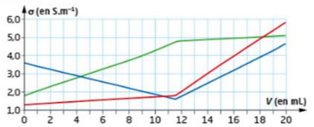
c. Déterminer la concentration en quantité d'hydrogénocarbonate de sodium c₁ de la solution.
a. Les espèces ioniques présentes en solution au cours du titrage sont : Na⁺ (ion spectateur, présent depuis le début), HCO₃⁻ (réactif titré, sa quantité diminue jusqu'à l'équivalence), Cl⁻ (ion spectateur apporté par la solution titrante, sa quantité augmente tout au long du titrage) et H₃O⁺ (réactif titrant, consommé par la réaction avant l'équivalence donc quasi absent, puis en excès après l'équivalence).
b. Avant l'équivalence, HCO₃⁻ (λ = 4,5) disparaît et est remplacé par Cl⁻ (λ = 7,6) apporté par le titrant ; Na⁺ reste constant. Comme λCl⁻ > λHCO₃⁻, la conductivité augmente légèrement avant l'équivalence. Après l'équivalence, Cl⁻ continue d'être apporté et H₃O⁺, très conducteur (λ = 35, largement supérieur aux autres valeurs), s'accumule en excès : la conductivité augmente alors beaucoup plus fortement. Cette allure (légère pente positive avant l'équivalence, pente beaucoup plus forte après) correspond à la courbe rouge.
c. À l'équivalence, les réactifs sont introduits dans les proportions stœchiométriques (coefficients égaux à 1) : n(HCO₃⁻)initial = n(H₃O⁺)versé à l'éqv = c₂ × V₂,éqv.
n(HCO₃⁻) = 1,4 × 11,6×10⁻³ ≈ 1,62×10⁻² mol
c₁ = n(HCO₃⁻)/V₁ = 1,62×10⁻²/0,100 ≈ 0,162 mol·L⁻¹
Exercice 34 : Taux d'acide d'une huile
Une huile d'olive vierge de taux d'acidité de 1,55 % (valeur de référence), soit 1,55 g d'acide oléique noté RCOOH dans 100 g d'huile, est analysée par titrage pH-métrique. Un échantillon de volume Vhuile = 20,0 mL d'huile d'olive en solution dans un solvant (mélange d'éthanol et d'éther éthylique) est titré par ajout progressif d'une solution S de potasse alcoolique ((K⁺, HO⁻) en solution dans l'éthanol) de concentration en quantité de matière cB = 100 mmol·L⁻¹. Le saut de pH est observé pour un volume versé égal à VB,éqv = 10,4 mL.
Données : masse molaire de l'acide oléique M = 282 g·mol⁻¹ ; masse volumique de l'huile ρhuile = 0,92 g·mL⁻¹ ; incertitudes-types : u(cB) = 0,002 mol·L⁻¹ ; u(VB,éqv) = 0,2 mL ; u(Vhuile) = 0,1 mL.
Formule de composition des incertitudes-types (grandeurs expérimentales uniquement) :
(u(mA,total)/mA,total)² = (u(VB,éqv)/VB,éqv)² + (u(cB)/cB)² + (u(Vhuile)/Vhuile)²
a. Écrire l'équation de la réaction support de titrage.
b. Déterminer l'expression de la masse mA d'acide oléique contenue dans le volume d'huile prélevé en fonction de cB, VB,éqv et M.
c. Exprimer puis calculer la masse totale d'acide oléique mA,total dans un échantillon d'huile de masse m = 100 g.
d. Déterminer l'incertitude-type u(mA,total) sur la masse totale d'acide oléique. Seules les incertitudes-type sur les grandeurs expérimentales (cB, VB,éqv, Vhuile) seront considérées.
e. Conclure sur la validité de la mesure effectuée.
a. RCOOH(aq) + HO⁻(aq) → RCOO⁻(aq) + H₂O(ℓ)
b. À l'équivalence : n(RCOOH) = n(HO⁻)versé = cB × VB,éqv, donc mA = cB × VB,éqv × M.
c. mA = 0,100 × 10,4×10⁻³ × 282 ≈ 0,293 g, masse d'acide oléique contenue dans mhuile,prélevée = ρhuile × Vhuile = 0,92 × 20,0 = 18,4 g d'huile. Par proportionnalité pour ramener à m = 100 g :
mA,total = mA × m/(ρhuile×Vhuile) = (cB×VB,éqv×M×m)/(ρhuile×Vhuile) = (0,100×10,4×10⁻³×282×100)/(0,92×20,0) ≈ 1,59 g
d. Incertitude-type relative :
(u(mA,total)/mA,total)² = (0,2/10,4)² + (0,002/0,100)² + (0,1/20,0)² = 3,70×10⁻⁴ + 4,00×10⁻⁴ + 2,50×10⁻⁵ ≈ 7,95×10⁻⁴
u(mA,total)/mA,total ≈ 0,0282 (soit environ 2,8 %), d'où u(mA,total) = 1,59 × 0,0282 ≈ 0,045 g
On obtient donc mA,total = (1,59 ± 0,05) g.
e. Écart normalisé par rapport à la valeur de référence mréf = 1,55 g : z = |1,59 − 1,55|/0,045 ≈ 0,98. Comme z < 2, la masse mesurée est compatible avec la valeur de référence : la mesure est validée.
Exercice 35 : Dilution et allure de courbe
Le logiciel de simulation Dozzzaqueux permet de simuler les courbes de titrage conductimétrique d'une solution SA d'acide chlorhydrique (H₃O⁺(aq), Cl⁻(aq)) de concentration en quantité de matière cA par une solution SB d'hydroxyde de sodium (Na⁺(aq), HO⁻(aq)) de concentration en quantité de matière cB = 0,100 mol·L⁻¹.
L'objectif est de comparer l'allure des courbes obtenues pour deux simulations présentant un volume à l'équivalence VB,éqv = 10,0 mL, mais avec un volume de solution titrée différent : cas 1 : VA1 = 100 mL ; cas 2 : VA2 = 10,0 mL.
a. Vérifier que la quantité de matière d'espèce titrée est identique dans ces deux cas. Déterminer les concentrations des solutions d'acide chlorhydrique cA1 et cA2 dans les cas 1 et 2 respectivement.
b. En s'aidant de la notice simplifiée, simuler les deux courbes de titrages et les superposer.
Logiciel accessible sur 🔗 jeanmarie.biansan.free.fr/dozzzaqueux.html 📄 Notice simplifiée du logiciel (PDF)
c. Identifier le cas permettant une détermination de l'équivalence la plus précise. Conclure sur la précaution à prendre avant d'effectuer un titrage conductimétrique.
a. À l'équivalence : n(H₃O⁺)initial = n(HO⁻)versé = cB × VB,éqv = 0,100 × 10,0×10⁻³ = 1,00×10⁻³ mol. Cette quantité ne dépendant que de cB et VB,éqv, identiques dans les deux cas, la quantité de matière d'espèce titrée est bien la même (1,00×10⁻³ mol) dans les deux cas.
cA1 = n/VA1 = 1,00×10⁻³/0,100 = 1,00×10⁻² mol·L⁻¹
cA2 = n/VA2 = 1,00×10⁻³/10,0×10⁻³ = 0,100 mol·L⁻¹ (soit 10 fois plus concentrée que cA1, dans le rapport inverse des volumes)
b. Les deux simulations donnent, dans les deux cas, une courbe en V : la conductivité γ diminue avant l'équivalence (H₃O⁺, très conducteur, est remplacé par Na⁺, moins conducteur) puis augmente après l'équivalence (HO⁻ en excès, très conducteur, s'accumule). Superposées, les deux courbes présentent la même abscisse d'équivalence (V = 10,0 mL) mais des allures différentes :
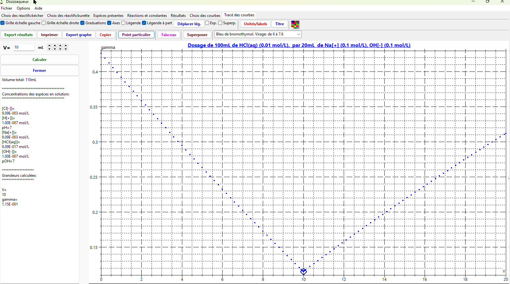
Cas 1 : VA1 = 100 mL, cA1 = 0,01 mol·L⁻¹ — γéqv ≈ 0,115 S·m⁻¹
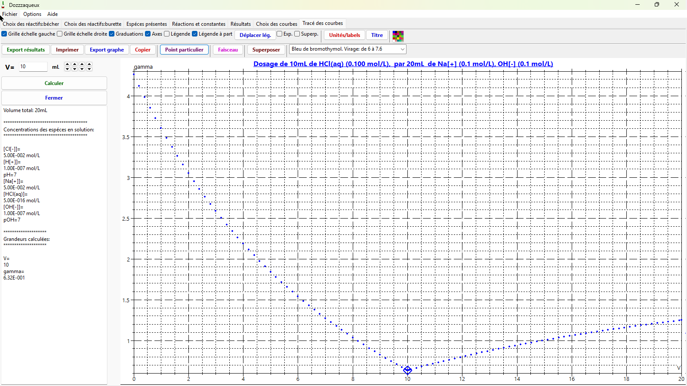
Cas 2 : VA2 = 10,0 mL, cA2 = 0,100 mol·L⁻¹ — γéqv ≈ 0,632 S·m⁻¹
c. Dans le cas 1, la branche avant l'équivalence est quasiment rectiligne : le volume versé à l'équivalence (10,0 mL) reste faible devant le volume initial (100 mL), donc la dilution du contenu du bécher au cours du titrage est quasi négligeable. L'intersection des deux segments (l'équivalence) est nette et facile à repérer. Dans le cas 2, la branche avant l'équivalence est nettement courbée (bien visible sur le graphique) : le volume total double quasiment entre le début et l'équivalence (de 10 à 20 mL), la dilution du bécher n'est plus négligeable et déforme le segment, qui ne peut plus être assimilé à une droite. L'intersection est alors beaucoup moins précise à déterminer par extrapolation linéaire. Le cas 1 permet donc la détermination la plus précise de l'équivalence.
Précaution à retenir : avant d'effectuer un titrage conductimétrique, il faut choisir (ou diluer) le volume de solution titrée de sorte qu'il reste grand devant le volume versé à l'équivalence, afin que la dilution du bécher pendant le titrage reste négligeable ; les segments de la courbe restent alors linéaires et l'équivalence, obtenue par leur intersection, peut être déterminée avec précision.
Exercice 37 : Formule d'une amine
Un échantillon de masse m = 0,146 g d'une amine de formule CnH2n+1NH₂ (n entier non nul) est dissous dans 100 mL d'eau. Un titrage pH-métrique est réalisé par une solution d'acide chlorhydrique (H₃O⁺(aq), Cl⁻(aq)) de concentration en quantité cA = 0,25 mol·L⁻¹ afin de déterminer la valeur de n. La courbe de titrage suivante est obtenue.
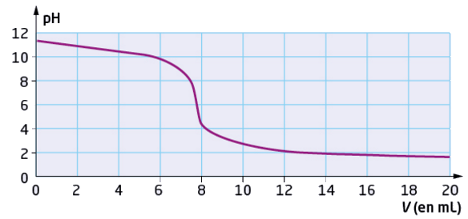
Données : couple acide-base CnH2n+1NH₃⁺/CnH2n+1NH₂ ; masses molaires atomiques (en g·mol⁻¹) : MH = 1,0 ; MC = 12,0 ; MN = 14,0.
Déterminer la formule brute de l'amine.
Le saut de pH sur la courbe se situe vers Véqv ≈ 8,0 mL.
À l'équivalence : n(amine) = n(H₃O⁺)versé = cA × Véqv = 0,25 × 8,0×10⁻³ = 2,0×10⁻³ mol
Masse molaire de l'amine : M = m/n(amine) = 0,146/2,0×10⁻³ = 73,0 g·mol⁻¹
La formule CnH2n+1NH₂ s'écrit aussi CnH2n+3N, d'où : M = 12,0n + 1,0×(2n+3) + 14,0 = 14,0n + 17,0.
14,0n + 17,0 = 73,0 ⟹ n = (73,0 − 17,0)/14,0 = 4,0
L'amine a donc pour formule brute C₄H₉NH₂ (soit C₄H₁₁N).
Exercice 38 : La simulation comme outil prédictif
Le nigari est un sel marin de chlorure de magnésium MgCl₂ cristallisé non raffiné, traditionnellement utilisé au Japon pour la préparation du tofu.
Un langage de programmation est utilisé afin de simuler l'évolution des quantités de matière lors du titrage d'un échantillon obtenu par dissolution de 0,25 g de nigari supposé pur dans un volume V₁ = 200 mL d'eau, par une solution d'hydroxyde de sodium (Na⁺(aq), HO⁻(aq)) de concentration en quantité de matière c₂ = 0,20 mol·L⁻¹.
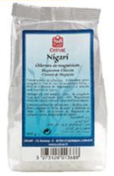
L'équation de la réaction support de titrage s'écrit :
Mg²⁺(aq) + 2 HO⁻(aq) → Mg(OH)₂(s)
Données : masse molaire du chlorure de magnésium M = 95,2 g·mol⁻¹ ; conductivités ioniques molaires (en mS·m²·mol⁻¹) : λMg²⁺ = 10,6 ; λCl⁻ = 7,6 ; λNa⁺ = 5,0 ; λHO⁻ = 19,9.
Extrait du code Python fourni (à compléter) :
Choisis ton niveau, complète le code directement dans la zone ci-dessous, puis exécute-le. La question e. te demandera de décommenter et compléter la partie « suivi conductimétrique » en bas du programme ; les input() s'afficheront alors sous forme de boîtes de dialogue.
Éditeur (modifie le code ici) :
Ressource complémentaire : 📄 Tableau à compléter (PDF)
a. Attribuer les espèces génériques A, B, C et ions spectateurs à celles présentes dans le titrage étudié.
b. À l'aide du code fourni, compléter le tableau d'évolution de composition du système au cours du titrage proposé.
c. Compléter le code fourni pour obtenir le tracé de l'évolution des quantités de matières du système en fonction du volume V de solution titrante versée.
d. Prévoir l'allure de la courbe de titrage conductimétrique d'après les courbes précédentes.
e. Vérifier cette allure en complétant le code fourni. Conclure sur la possibilité d'utiliser ce titrage pour contrôler la pureté du nigari.
a. A = Mg²⁺(aq) (réactif titré) ; B = HO⁻(aq) (réactif titrant) ; C = Mg(OH)₂(s) (produit). Ions spectateurs : Cl⁻(aq) (spectateur du réactif titré, noté S_A, apporté par le nigari MgCl₂) et Na⁺(aq) (spectateur du réactif titrant, noté S_B, apporté par la solution d'hydroxyde de sodium).
b. Tableau d'évolution de la composition du système :
| Espèce | Mg²⁺(aq) | HO⁻(aq) | Mg(OH)₂(s) | Cl⁻(aq) | Na⁺(aq) |
|---|---|---|---|---|---|
| Rôle | Titré | Titrant | Produit | Ions spectateurs | |
| Pour toutes les valeurs de V | n0 | c₂×V | 0 | 2×n0 | c₂×V |
| V < Véqv Réactif limitant : HO⁻ | n0 − c₂×V/2 | 0 | c₂×V/2 | 2×n0 | c₂×V |
| V = Véqv Réactifs limitants : HO⁻ et Mg²⁺ | 0 | 0 | c₂×Véqv/2 | 2×n0 | c₂×Véqv |
| V > Véqv Réactif limitant : Mg²⁺ | 0 | c₂×V − c₂×Véqv | c₂×Véqv/2 | 2×n0 | c₂×V |
Tableau à compléter : version élève · version professeur
c. n0 = 1000 × 0,25/95,2 ≈ 2,63 mmol ; Véqv = 2×n0/c₂ = 2×2,63/0,20 ≈ 26,3 mL. Les deux premières lignes du code deviennent :
n0=1000*0.25/95.2 # Quantité de matière de nigari introduite (en mmol) vEqv=2*n0/cB # Calcul du volume équivalent (en mL)
Le reste du code, une fois exécuté, trace nA, nB, nC (qui s'annule/se stabilise) ainsi que les ions spectateurs nS_A (constant) et nS_B (croissant linéairement) en fonction de V.
d. Avant l'équivalence, seuls Mg²⁺ (qui diminue), Cl⁻ (constant) et Na⁺ (qui augmente) contribuent à la conductivité ; HO⁻ est totalement consommé (nB = 0) et Mg(OH)₂, solide, ne conduit pas. L'effet net (diminution de Mg²⁺ plus conducteur, remplacé par un peu de Na⁺ moins conducteur, avec en plus la dilution du bécher) rend la conductivité quasi stable ou légèrement décroissante avant l'équivalence. Après l'équivalence, HO⁻ (λ = 19,9, très supérieur aux autres valeurs) s'accumule en excès en plus de Na⁺ : la conductivité augmente alors nettement. On attend donc une allure en V dissymétrique : branche quasi plate (ou légèrement décroissante) avant l'équivalence, puis forte remontée après.
e. Code complet et fonctionnel (λC = 0 pour le solide Mg(OH)₂) : exécute-le directement ci-dessous (aucune modification n'est nécessaire) pour obtenir les deux tracés — répondre 1 puis 10,6 ; 19,9 ; 0 ; 7,6 ; 5,0 aux boîtes de dialogue (λMg²⁺, λHO⁻, λMg(OH)₂, λCl⁻, λNa⁺) et 200 pour le volume initial vA.
La courbe simulée confirme la prévision de la question d. : une branche quasiment plate avant l'équivalence, suivie d'une remontée nette après l'équivalence, avec un changement de pente bien marqué à V = Véqv ≈ 26,3 mL. Cette rupture de pente étant nette et facilement repérable, ce titrage peut être utilisé pour contrôler la pureté du nigari : en réalisant le titrage conductimétrique réel d'un échantillon de nigari du commerce et en comparant la quantité de Mg²⁺ ainsi déterminée à celle attendue pour un échantillon pur (calculée ici à partir de la masse et de la masse molaire de MgCl₂), un écart significatif révélerait la présence d'impuretés.
Exercice 39 : Titrage spectrophotométrique
Le nickel est couramment utilisé en solution sous forme d'ions Ni²⁺ afin de recouvrir par électrolyse des pièces métalliques d'une couche de nickel métallique protectrice. Pour contrôler la qualité d'un bain d'électrolyse, le titrage d'un échantillon de volume VS = 50,0 mL d'une solution de nitrate de nickel (Ni²⁺(aq), 2 NO₃⁻(aq)) diluée d'un facteur dix est réalisé à l'aide d'une solution d'EDTA disodique (2 Na⁺(aq), H₂Y²⁻(aq)) de concentration en quantité de matière c = 1,00 mol·L⁻¹.
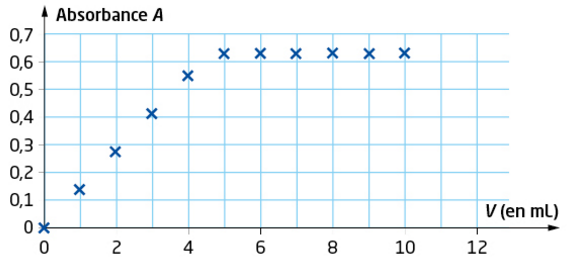
L'équation de la réaction support du titrage est :
Ni²⁺(aq) + H₂Y²⁻(aq) → [NiY]²⁻(aq)
L'espèce [NiY]²⁻ est la seule espèce dont une solution aqueuse est colorée. Après chaque ajout de solution titrante, l'absorbance de la solution à 570 nm est mesurée. Le nuage de points obtenu est donné ci-contre.
a. Donner l'expression de l'absorbance A de la solution en fonction de la concentration en quantité de [NiY]²⁻.
b. Dresser un tableau de l'évolution des quantités de matière des espèces intervenant dans la réaction de titrage, avant et après l'équivalence.
c. En déduire une expression littérale de l'absorbance de la solution pour chaque partie du titrage.
d. Vérifier que le volume V de la solution d'EDTA ajoutée est négligeable devant VS tout au long du titrage. Donner alors les expressions simplifiées de l'absorbance et vérifier leur cohérence avec le tracé expérimental.
e. Déterminer graphiquement le volume à l'équivalence.
f. En déduire la concentration en quantité cS d'ion nickel.
a. Comme l'espèce [NiY]²⁻ est la seule qui absorbe à cette longueur d'onde, la loi de Beer-Lambert s'écrit : A570 = ε570 × ℓ × [NiY]²⁻.
b. Tableau d'évolution (c'S = concentration en Ni²⁺ dans la solution diluée) :
| Espèce | Ni²⁺ | H₂Y²⁻ | [NiY]²⁻ |
|---|---|---|---|
| Rôle | Titré | Titrant | Produit |
| Pour toutes les valeurs de V | c'S×VS | c×V | 0 |
| V < Véqv Réactif limitant : H₂Y²⁻ | c'S×VS − c×V | 0 | c×V |
| V = Véqv Réactifs limitants : H₂Y²⁻ et Ni²⁺ | 0 | 0 | c×Véqv = c'S×VS |
| V > Véqv Réactif limitant : Ni²⁺ | 0 | c×V − c×Véqv | c×Véqv = c'S×VS |
Tableau à compléter : version élève · version professeur
c. La concentration en [NiY]²⁻ s'obtient en divisant sa quantité de matière par le volume total de solution VS+V :
Avant l'équivalence : A570, avant éqv = ε570 × ℓ × (c×V)/(VS+V)
Après l'équivalence : A570, après éqv = ε570 × ℓ × (c'S×VS)/(VS+V)
d. D'après les valeurs de volumes expérimentales, on ajoute au maximum environ 10 mL d'EDTA disodique dans 50 mL de solution titrée, ce qui nous place dans une situation limite pour pouvoir négliger V devant VS. Cependant, la courbe expérimentale montre que l'absorbance est bien constante après l'équivalence — or dans son expression, seul le terme V peut disparaître pour qu'elle ne dépende plus de V. Ainsi, si l'absorbance est effectivement constante, c'est bien que le terme V peut être négligé devant VS tout au long du titrage. Les expressions se simplifient alors en :
avant l'équivalence : A570, avant éqv ≈ (ε570×ℓ×c/VS) × V — une droite de coefficient directeur ε570×ℓ×c/VS, passant par l'origine
après l'équivalence : A570, après éqv ≈ ε570×ℓ×c'S — une constante
Cette allure (droite croissante passant par l'origine, puis palier constant) est bien cohérente avec le tracé expérimental.
e. L'équivalence correspond donc à la rupture de pente de la courbe de l'absorbance en fonction du volume de solution titrante ajoutée. En traçant les deux droites sécantes s'appuyant sur les points expérimentaux, leur intersection donne en abscisse le volume à l'équivalence : Véqv ≈ 4,6 mL.
f. À l'équivalence : nNi²⁺,début = nH₂Y²⁻,éqv, soit c'S × VS = c × Véqv.
c'S = (c×Véqv)/VS = (1,00×4,6)/50,0 ≈ 0,092 mol·L⁻¹
Soit, pour la solution du bain d'électrolyse (avant dilution par 10) :
cS = 10 × c'S ≈ 0,92 mol·L⁻¹
Remarque : cet exercice présente une modalité de titrage alternative, par spectrophotométrie. Les points communs avec les titrages pH-métrique et conductimétrique sont à noter, puisque l'équivalence y est ici aussi déterminée au niveau d'une rupture de pente de la courbe.
Exercice 42 : Du calcium pour l'aquarium
Résolution de problème
Le calcium constitue une substance de construction fondamentale pour les squelettes calcaires de nombreux animaux marins (coraux durs ou mous, mollusques, etc.). Une méthode classique de l'apport de calcium dans l'eau d'un aquarium marin est l'ajout d'hydroxyde de calcium, un composé ionique faiblement soluble dans l'eau.
Doc. 1 — Apport en calcium dans un aquarium. Le calcium nécessaire à l'eau d'un aquarium peut être apporté par la méthode du Kalkwasser : deux cuillères à soupe d'hydroxyde de calcium sont introduites dans 10 L d'eau distillée, puis le mélange est agité vigoureusement durant deux minutes. Une heure plus tard, le liquide limpide surnageant une phase solide, de pH proche de 12, peut être utilisé pour l'aquarium marin. Le pH de l'eau de l'aquarium ne doit pas dépasser 8,4 et la concentration en masse optimale en ion calcium Ca²⁺ est de 400 mg·L⁻¹.
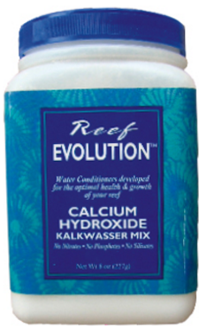
Doc. 2 — Étude expérimentale de la solubilité de l'hydroxyde de calcium. Une solution S₁ de volume V₁ = 500 mL de chlorure de calcium à la concentration en quantité de matière c₁ = 100 mmol·L⁻¹ est versée dans un grand bécher. Une solution d'hydroxyde de sodium à la concentration en quantité de matière c₂ = 1,00 mol·L⁻¹ est ajoutée progressivement jusqu'à observer l'apparition de particules solides malgré une agitation modérée. La solution est alors notée S₂.
La solution S₂ est filtrée et recueillie dans un erlenmeyer (solution S₃).
Un échantillon de volume V₃ = 20,0 mL de la solution S₃, complété à 100 mL avec de l'eau distillée, est titré par une solution d'acide chlorhydrique de concentration en quantité de matière cA = 100 mmol·L⁻¹. Le nuage de points expérimentaux ci-contre est obtenu.
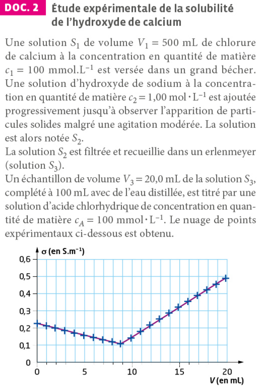
Données : la solubilité s d'un composé ionique est la concentration en masse maximale, exprimée en g·L⁻¹, de ce composé qui peut être dissous à température donnée dans un solvant. La solution ainsi préparée est dite saturée. Pour un composé ionique de formule CxAy, une solution aqueuse saturée de ce composé contient des ions Cp+ et Aq− en solution aqueuse et le solide CxAy. Masse molaire de l'ion calcium : M(Ca²⁺) = 40,0 g·mol⁻¹.
1. Questions préliminaires
a. Déterminer si la solution S₂ est saturée.
b. Faire une liste des espèces présentes dans chacune des solutions S₂ et S₃.
2. Problème
Un aquariophile teste l'eau de son aquarium de 100 L à l'aide d'un test spécifique et constate que la concentration en masse d'ion Ca²⁺ n'est que de 360 mg·L⁻¹. Déterminer le volume d'eau saturée en hydroxyde de calcium à ajouter à son aquarium pour retrouver le taux optimal.
1a. La solution S₂ contient encore des particules solides visibles, malgré l'agitation : elle est donc en équilibre avec du solide Ca(OH)₂(s) non dissous. Par définition, une solution qui contient la quantité maximale de composé dissous, au contact du solide restant, est une solution saturée. S₂ est donc bien saturée.
1b. Espèces présentes :
Dans S₂ (mélange hétérogène) : Ca²⁺(aq), Cl⁻(aq) (apportés par S₁), Na⁺(aq), HO⁻(aq) (apportés par la solution d'hydroxyde de sodium), à leurs concentrations de saturation, ainsi que le solide Ca(OH)₂(s) non dissous, dans l'eau (solvant).
Dans S₃ (filtrat de S₂) : les mêmes espèces dissoutes que dans S₂ — Ca²⁺(aq), Cl⁻(aq), Na⁺(aq), HO⁻(aq) — mais sans le solide Ca(OH)₂(s), retenu par la filtration.
2. Concentration en ion Ca²⁺ manquante dans l'aquarium :
cmanquante = coptimale − cmesurée = 400 − 360 = 40 mg·L⁻¹
Masse de calcium manquante : mmanquante = cmanquante × Vaquarium = 0,040 g·L⁻¹ × 100 L = 4,0 g
Exploitation du titrage (Doc. 2) : équation support H₃O⁺(aq) + HO⁻(aq) → H₂O(ℓ). À l'équivalence : n(HO⁻)début = n(H₃O⁺)éqv, soit cHO⁻×V₃ = cA×VA,éqv (le facteur de dilution à 100 mL n'intervient pas : les quantités de matière sont inchangées par une dilution).
cHO⁻ = (cA×VA,éqv)/V₃ = (100×9,0)/20,0 = 45 mmol·L⁻¹ = 4,5×10⁻² mol·L⁻¹
D'après la stœchiométrie de Ca(OH)₂ (Ca(OH)₂ → Ca²⁺ + 2 HO⁻) :
cCa²⁺ = cHO⁻/2 = 4,5×10⁻²/2 ≈ 2,3×10⁻² mol·L⁻¹ (dans la solution saturée S₃, identique à l'eau saturée du Doc. 1)
nmanquant(Ca²⁺) = mmanquante/M(Ca²⁺) = 4,0/40,0 = 0,10 mol
Vajout = nmanquant/cCa²⁺ = 0,10/2,3×10⁻² ≈ 4,4 L
Validation : ce volume semble cohérent par rapport au volume de l'aquarium (100 L). Le Doc. 1 décrit par ailleurs la préparation de 10 L de solution saturée : on s'attend donc à une valeur inférieure à 10 L, mais de l'ordre de grandeur de plusieurs litres — ce qui est bien le cas ici.
Grille d'évaluation par compétences : 📄 Fiche d'évaluation (PDF)
Exercice 43 : Quel mal de tête ?
ECE — Épreuve de compétences expérimentales
Une solution S de volume V = 250 mL a été préparée par dissolution d'un comprimé classique contre la fièvre et les douleurs... mais on ne sait plus lequel !
● Comment identifier de quel médicament il s'agit et contrôler la masse de principe actif dans le comprimé utilisé ?
Doc. 1 — Médicaments possibles. D'après les normes de la Pharmacopée européenne : un comprimé doit contenir entre 99 % et 101 % de la masse en principe actif indiquée sur la notice.
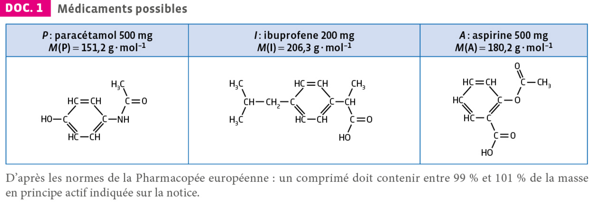
Doc. 2 — Spectres UV-visible de référence. Les spectres UV-visible des principes actifs possibles sont donnés ci-dessous.
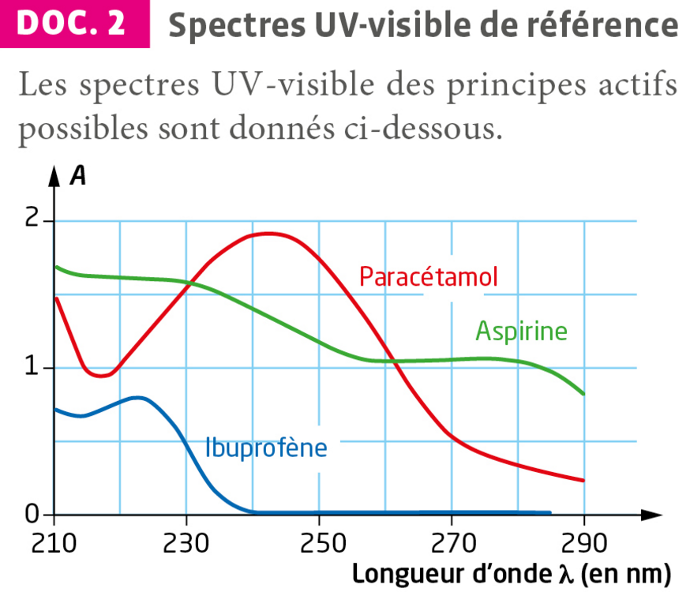
Protocole. Le principe actif présent dans la solution S, noté XH, est titré par une solution d'hydroxyde de sodium (Na⁺(aq), HO⁻(aq)) de concentration en quantité de matière cB = 100 mmol·L⁻¹ avec un suivi conductimétrique. L'équation de la réaction support du titrage est : XH(aq) + HO⁻(aq) → X⁻(aq) + H₂O(ℓ). Les excipients du comprimé ne perturbent pas le dosage.
1. Placer un échantillon de volume V de la solution de médicament dans un bécher.
2. Réaliser le montage de titrage et procéder au titrage conductimétrique en notant VB le volume de solution titrante ajoutée.
3. Tracer le nuage de points expérimentaux de coordonnées (VB ; σ) à l'aide du logiciel fourni ou en utilisant du papier millimétré.
📋 Matériel et produits pour un poste : conductimètre + sonde + solutions étalons, porte-électrode, burette graduée de 25 mL sur support, agitateur magnétique + barreau aimanté, bécher de 300 mL, béchers de prélèvement (100 mL), éprouvette graduée de 100 mL (éventuellement 200 mL), éventuellement quelques pipettes (10, 20, 50 mL), papier absorbant, poire à pipeter, pissette d'eau distillée, 100 mL de la solution S, ≈ 40 mL de solution d'hydroxyde de sodium à 100 mmol·L⁻¹.
1. À l'aide du spectre UV-visible expérimental du comprimé étudié fourni par le professeur, faire une hypothèse sur la nature du médicament.
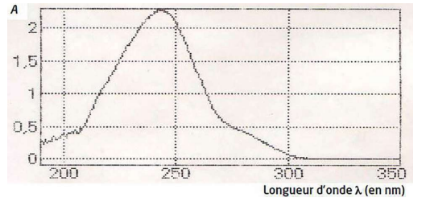
2. Confirmer ou infirmer cette hypothèse à l'aide du spectre IR du principe actif contenu dans le médicament fourni par le professeur.
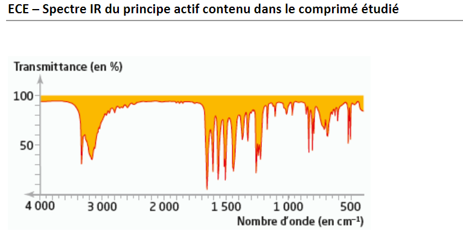
📞 Appel n°1 : appeler le professeur pour lui présenter la conclusion, ou en cas de difficulté.
3. Déterminer le volume V de la solution S à titrer permettant d'obtenir un volume à l'équivalence compris entre 10 et 15 mL et qui puisse être prélevé avec le matériel disponible.
4. Mettre en œuvre le protocole.
📞 Appel n°2 : appeler le professeur pour lui présenter les résultats expérimentaux, ou en cas de difficulté.
5. Déterminer la quantité de principe actif dans l'échantillon étudié. Conclure.
1. Le spectre expérimental présente un maximum d'absorption unique vers λ ≈ 245 nm, avec une décroissance vers 0 au-delà de 290-300 nm. Cette allure (pic marqué autour de 240-250 nm) correspond à celle du spectre de référence du paracétamol (Doc. 2), et non à celle de l'ibuprofène (qui s'annule dès 240 nm) ni à celle de l'aspirine (qui ne présente pas de pic net, plutôt un plateau décroissant). Hypothèse : paracétamol.
2. Le spectre IR fourni présente une bande large vers 3300-2700 cm⁻¹ (superposition des liaisons O-H phénol et N-H amide, toutes deux engagées dans des liaisons hydrogène) et une bande intense et fine caractéristique vers 1650-1660 cm⁻¹, typique d'un C=O d'amide (« bande amide I », à une position plus basse que celle d'un ester ou d'un acide carboxylique). Cette signature est cohérente avec la structure du paracétamol (groupe amide -NH-C(=O)-CH₃) et non avec celle de l'aspirine ou de l'ibuprofène (acides carboxyliques, sans fonction amide). Le spectre IR confirme l'hypothèse du paracétamol.
3. En supposant l'hypothèse vérifiée (paracétamol, 500 mg, M = 151,2 g·mol⁻¹) : cS = m/(M×V) = 0,500/(151,2×0,250) ≈ 1,32×10⁻² mol·L⁻¹. Pour obtenir Véqv ≈ 12-13 mL (milieu de l'intervalle [10;15] mL) avec cB = 0,100 mol·L⁻¹, il faut V = cB×Véqv/cS ≈ (0,100×12,5×10⁻³)/1,32×10⁻² ≈ 95 mL. On retient donc V = 100 mL, mesurable avec l'éprouvette graduée de 100 mL disponible (ce qui donnerait Véqv théorique ≈ 13,2 mL, bien dans l'intervalle demandé).
4. Après montage (burette remplie de la solution d'hydroxyde de sodium, échantillon de V = 100 mL de S dans le bécher de 300 mL, sonde conductimétrique immergée, agitation magnétique), on ajoute la solution titrante par petits volumes croissants en relevant VB et σ à chaque ajout, jusqu'à dépasser nettement l'équivalence, puis on trace le nuage de points σ = f(VB) : on obtient une courbe en V, décroissante puis croissante, comme pour les titrages conductimétriques précédents.
5. D'après le nuage de points obtenu expérimentalement, la rupture de pente donne (à titre d'exemple) Véqv ≈ 13,2 mL.
n(XH) dans l'échantillon (V = 100 mL) = cB×Véqv = 0,100×13,2×10⁻³ ≈ 1,32×10⁻³ mol
n(XH) total dans les 250 mL de S = n(XH)échantillon × (Vtotal/V) = 1,32×10⁻³ × (250/100) ≈ 3,30×10⁻³ mol
m(XH) = n×M(paracétamol) = 3,30×10⁻³ × 151,2 ≈ 0,499 g = 499 mg
La Pharmacopée européenne impose un contenu compris entre 99 % et 101 % de 500 mg, soit entre 495 mg et 505 mg. La masse mesurée (499 mg) est bien comprise dans cet intervalle : le comprimé étudié est conforme.
Conclusion : le comprimé dissous dans la solution S est bien un comprimé de paracétamol (confirmé par UV-visible puis par IR), et sa teneur en principe actif (≈ 499 mg pour 500 mg annoncés) respecte les normes de la Pharmacopée européenne.
Exercice 44 : Méthode de Monte-Carlo
Exercice bac — différenciation
Une expérience a été réalisée au laboratoire pour contrôler la composition d'un comprimé de vitamine C 500. L'objectif est d'utiliser un langage de programmation exploitant la méthode de Monte-Carlo pour obtenir la valeur de la masse mA de vitamine C dans ce comprimé et son incertitude-type à partir des valeurs expérimentales obtenues lors du protocole.
Doc. 1 — Protocole expérimental et résultats obtenus. La solution titrante est obtenue par dissolution dans l'eau d'un échantillon d'hydroxyde de sodium de masse mB = 8,00 g dans une fiole jaugée de volume VB = 1,00 L. Le comprimé de vitamine C 500 est écrasé et la poudre obtenue est mise en solution dans un volume d'environ 50 mL d'eau, dans un bécher. L'équation de la réaction support du titrage est :
C₆H₈O₆(aq) + HO⁻(aq) → C₆H₇O₆⁻(aq) + H₂O(ℓ)
Le volume à l'équivalence obtenu expérimentalement est Véqv = 14,0 mL.
Données : masse molaire de l'acide ascorbique (ou vitamine C) : MA = 176,0 g·mol⁻¹ ; masse molaire de l'hydroxyde de sodium : MB = 40,0 g·mol⁻¹.
| Grandeur | Masse mB | Volume VB | Masse molaire MA | Masse molaire MB | Volume à l'équivalence Véqv |
|---|---|---|---|---|---|
| Incertitude-type | u(mB) = 0,01 g | u(VB) = 0,5 mL | u(MA) = 0,0005 g·mol⁻¹ | u(MB) = 0,0005 g·mol⁻¹ | u(Véqv) = 0,2 mL |
1. Expliquer brièvement ce que le code fourni permet d'extraire.
Alea(L) et la boucle for j in range(Iteration) : à chaque itération, une valeur est tirée aléatoirement pour chaque grandeur mesurée, selon une loi normale centrée sur la valeur mesurée avec l'incertitude-type correspondante comme écart-type. Le calcul de mA est ensuite refait à chaque tirage, ce qui construit une distribution simulée de valeurs possibles pour mA.2. À l'aide de la relation à l'équivalence entre la quantité nA,début du réactif titré initialement introduit et la quantité nB,éqv du réactif titrant ajouté à l'équivalence, justifier les instructions permettant d'obtenir la valeur de la masse mA de vitamine C contenue dans un comprimé.
Alea_mA du code.3. Compléter le code fourni afin d'afficher à l'exécution la valeur de mA, son incertitude-type u(mA), ainsi que l'histogramme de la distribution simulée pour les valeurs de mA.
d s'obtient avec np.mean(d), et son incertitude-type (écart-type) avec np.std(d, ddof=1). Utilise plt.xlabel(...) et plt.ylabel(...) pour légender l'histogramme.4. Faire varier le nombre d'itérations (10¹ ; 10² ; ... ; 10⁶) et interpréter les modifications observées. Conclure sur la pertinence de la valeur proposée dans le Doc. 2.
Iteration dans l'éditeur, puis exécute le code plusieurs fois pour chaque valeur. Observe la forme de l'histogramme (régularité, ressemblance à une courbe en cloche) et la stabilité des valeurs affichées de mA et u(mA) d'une exécution à l'autre.5. Faire varier les incertitudes-types (par exemple u(Véqv)) et interpréter les modifications observées. Commenter l'importance des choix expérimentaux effectués.
V_Eqv, puis observe l'effet sur la largeur de l'histogramme et sur la valeur de u(mA) affichée. Compare avec l'effet d'une même modification sur u(mB) ou u(MA), par exemple.6. Le comprimé de vitamine C 500 contient 500 mg de principe actif. Comparer la valeur moyenne simulée à la valeur de référence et conclure.
Choisis ton niveau, complète le code directement dans la zone ci-dessous, puis exécute-le. Pour les questions 4 et 5, modifie directement les valeurs dans l'éditeur (Iteration, incertitudes-types) puis relance l'exécution.
Éditeur (modifie le code ici) :
1. Le code met en œuvre la méthode de Monte-Carlo : à chaque itération, une valeur est tirée au hasard pour chacune des cinq grandeurs mesurées (mB, VB, MA, MB, Véqv), selon une loi normale centrée sur leur valeur mesurée avec, comme écart-type, leur incertitude-type respective. La masse mA est recalculée à chaque tirage, ce qui construit — après un grand nombre d'itérations — une distribution simulée de valeurs plausibles de mA, dont la moyenne donne la meilleure estimation de mA et l'écart-type donne son incertitude-type u(mA).
2. L'équation support du titrage donne un rapport stœchiométrique 1:1 entre C₆H₈O₆ et HO⁻, donc à l'équivalence : nA,début = nB,éqv = cB×Véqv, avec cB = mB/(MB×VB) la concentration de la solution titrante préparée. La masse de vitamine C (en mg) s'écrit alors :
mA = 1000 × nA,début × MA = 1000 × mB×Véqv×MA / (MB×VB)
ce qui correspond exactement à la ligne Alea_mA = 1000*Alea(m_B)*Alea(V_Eqv)*Alea(M_A)/(Alea(M_B)*Alea(V_B)), chaque grandeur étant simplement remplacée par un tirage aléatoire.
3. Code complet et fonctionnel proposé ci-dessous (exécute-le directement dans l'éditeur « Standard » ou « Confirmé » ci-dessus, ou dans l'éditeur du corrigé ci-dessous) :
Avec les 100 000 itérations proposées, on obtient typiquement : mA ≈ 492,8 mg et u(mA) ≈ 7,1 mg (valeurs proches de celles obtenues par un calcul direct de propagation des incertitudes).
4. Avec peu d'itérations (10¹, 10², 10³), l'histogramme est irrégulier, très éloigné d'une courbe en cloche, et les valeurs affichées de mA et u(mA) varient sensiblement d'une exécution à l'autre. En augmentant le nombre d'itérations (10⁴, 10⁵, 10⁶), l'histogramme se rapproche progressivement d'une distribution gaussienne bien régulière, et les valeurs de mA et u(mA) se stabilisent. La valeur de 10⁵ itérations proposée dans le Doc. 2 est donc pertinente : elle offre une estimation stable, sans nécessiter un temps de calcul excessif.
5. Augmenter une incertitude-type d'entrée élargit la distribution simulée de mA et augmente donc u(mA) ; la diminuer resserre la distribution et réduit u(mA). Comme les incertitudes relatives de MA et MB sont négligeables devant celles de Véqv, mB et VB, et que celle de Véqv est la plus grande (u(Véqv)/Véqv ≈ 1,4 %, contre environ 0,13 % pour mB et 0,05 % pour VB), c'est elle qui domine largement u(mA) : faire varier u(Véqv) modifie visiblement l'histogramme, alors que faire varier u(MA) ou u(MB) ne change presque rien. Cela montre l'intérêt de concentrer les efforts expérimentaux (choix de la burette, précision de repérage de l'équivalence) sur la grandeur qui limite le plus la précision du résultat final, plutôt que sur des grandeurs déjà très précises.
6. Écart normalisé par rapport à la valeur de référence mréf = 500 mg : z = |492,8 − 500|/7,1 ≈ 1,0. Comme z < 2, la valeur simulée est compatible avec la valeur de référence : le comprimé de vitamine C 500 étudié est conforme.
Technique de dosage de l'urée
Dosage colorimétrique de l'aluminium
Étude d'un herbicide
Additif alimentaire pour les agneaux
Juste une impression gustative ?
Analyse spectrale
- A = −log(I/I₀) ; T = I/I₀
- Loi de Beer-Lambert : A = ε·l·C (valide si C < 0,1 mol·L⁻¹)
- Spectre UV-visible : A = f(λ), λmax, couleur complémentaire
- Spectre IR : T = f(σ), σ = 1/λ, zone > 1500 cm⁻¹ utile aux groupes fonctionnels
Dosages par étalonnage
- Gamme étalon + courbe A = f(C) ou σ = f(C), droite passant par l'origine
- Loi de Kohlrausch : σ = k·C (solutions diluées, un seul soluté)
- Lecture graphique de C₀ à partir de la mesure A₀ ou σ₀
Titrages
- Réaction support : totale, rapide, unique
- Équivalence = changement de réactif limitant
- À l'équivalence : CA·VA/a = CB·VE/b
Suivi d'un titrage
- Conductimétrie : rupture de pente sur σ = f(V)
- pH-métrie : tangentes parallèles ou courbe dérivée
- Colorimétrie : changement de teinte, indicateur adapté au saut de pH
📝 QCM — Prérequis
Hatier-clic · Analyse spectrale (UV-visible, IR) — à faire avant la séquence
📝 QCM — Maîtrise des notions
Hatier-clic · Analyse spectrale (UV-visible, IR) — bilan de fin de séquence
📝 QCM — Prérequis
Hatier-clic · Titrages (dosages, équivalence) — à faire avant la séquence
📝 QCM — Maîtrise des notions
Hatier-clic · Titrages (dosages, équivalence) — bilan de fin de séquence
- Absorbance A
- Grandeur sans unité qui mesure l'atténuation d'un rayonnement traversant une solution : A = −log(I/I₀), avec I₀ l'intensité incidente et I l'intensité transmise.
- Transmittance T
- Rapport T = I/I₀ entre l'intensité transmise et l'intensité incidente d'un rayonnement traversant une solution.
- Loi de Beer-Lambert
- Relation de proportionnalité entre l'absorbance d'une solution et la concentration de l'espèce colorée qui absorbe : A = ε·l·C, valable pour des solutions suffisamment diluées (C < 0,1 mol·L⁻¹).
- Spectre infrarouge (IR)
- Représentation de la transmittance T en fonction du nombre d'onde σ = 1/λ ; les bandes d'absorption au-delà de 1500 cm⁻¹ permettent d'identifier les groupes caractéristiques d'une molécule.
- Spectre UV-visible
- Représentation de l'absorbance en fonction de la longueur d'onde, entre 200 et 800 nm ; présente une ou plusieurs bandes d'absorption assez larges passant par un maximum d'absorption λmax.
- Loi de Kohlrausch
- Relation de proportionnalité entre la conductivité σ d'une solution ionique diluée et la concentration C d'un unique soluté apporté : σ = k·C.
- Conductimètre
- Appareil qui mesure la conductance (ou la conductivité) d'une solution en appliquant une tension entre deux électrodes immergées ; les cations migrent vers l'électrode négative, les anions vers l'électrode positive.
- Conductance G
- Grandeur mesurée directement par le conductimètre (en siemens, S) ; reliée à la conductivité σ de la solution par la géométrie de la cellule de mesure (constante de cellule).
- Dosage par étalonnage
- Méthode de détermination d'une concentration inconnue à partir d'une courbe d'étalonnage (A = f(C) ou σ = f(C)), tracée à partir de solutions de concentrations connues.
- Mélange stœchiométrique
- Mélange dans lequel les réactifs sont introduits dans les proportions exactes des coefficients stœchiométriques de l'équation de la réaction : aucun réactif n'est en excès, tous sont consommés simultanément.
- Titrage
- Technique quantitative utilisant une réaction chimique support (totale, rapide et unique) entre l'espèce à doser et une solution titrante de concentration connue.
- Équivalence
- Instant d'un titrage où les réactifs ont été mélangés dans les proportions stœchiométriques ; correspond à un changement de réactif limitant.
- Volume équivalent VE
- Volume de solution titrante qu'il faut ajouter à la solution titrée pour atteindre l'équivalence, c'est-à-dire pour que le réactif titrant et le réactif titré soient dans les proportions stœchiométriques de la réaction support de titrage.
- Suivi conductimétrique
- Méthode de repérage de l'équivalence d'un titrage par mesure de la conductivité σ ; l'équivalence correspond à une rupture de pente sur la courbe σ = f(V).
- Suivi pH-métrique
- Méthode de repérage de l'équivalence d'un titrage par mesure du pH ; l'équivalence correspond au point d'inflexion de la courbe pH = f(V) (méthode des tangentes ou de la dérivée).
- Suivi colorimétrique
- Méthode de repérage de l'équivalence d'un titrage par changement de teinte de la solution, à l'aide d'un indicateur coloré adapté au saut de pH de l'équivalence.
- Indicateur coloré / Zone de virage
- Espèce dont la couleur change avec le pH ; sa zone de virage (intervalle de pH où la couleur change) doit contenir le pH à l'équivalence pour permettre un repérage colorimétrique correct.
- Chromophore (liaisons conjuguées)
- Enchaînement de liaisons doubles séparées par une liaison simple (conjugaison) responsable de l'absorption de la lumière visible par une molécule ; plus il y a de liaisons conjuguées, plus λmax se déplace vers les grandes longueurs d'onde.
- Isomérie Z / E
- Stéréoisomérie de configuration d'une molécule possédant une double liaison C=C non symétrique : Z si les substituants prioritaires sont du même côté de la double liaison, E s'ils sont de part et d'autre.
- Solution titrée / titrante
- La solution titrée contient l'espèce dont on cherche la concentration ; la solution titrante, de concentration connue, est ajoutée progressivement (généralement à la burette) jusqu'à l'équivalence.
- Conductivité molaire ionique λ
- Grandeur, en S·m²·mol⁻¹, qui caractérise l'aptitude d'un ion à conduire le courant électrique ; la conductivité d'une solution est la somme des contributions de chaque ion, σ = Σλᵢ[Xᵢ].
- Coefficient d'absorption molaire ε
- Grandeur, en L·mol⁻¹·cm⁻¹, caractéristique d'une espèce colorée à une longueur d'onde donnée, qui intervient dans la loi de Beer-Lambert A = ε·l·C.
- Analyse spectrale (spectroscopie)
- Étude quantitative de l'interaction entre la lumière (ou un rayonnement électromagnétique) et la matière, en fonction de la longueur d'onde ou du nombre d'onde du rayonnement.
▶ Vidéo — Cours 2
Stella · Méthodes d'analyses physiques d'un système chimique
▶ Vidéo — Cours 3
Stella · Méthodes d'analyses chimiques d'un système chimique
▶ Vidéo bilan — Chapitre 02
ClicHatier-Chapitre 2 · Méthodes physiques d'analyse d'un système chimique — synthèse de fin de chapitre
▶ Vidéo bilan — Chapitre 03
ClicHatier-Chapitre 3 · Titrages — synthèse de fin de chapitre
▶ Comment exploiter un spectre IR
Paul Olivier
▶ Titrage pH-métrique et Absorbance
Paul Olivier — Dosage par étalonnage
▶ Titrage conductimétrique
Paul Olivier
⚗️ Simulation — Beer's Law Lab
PhET · Mesurer l'absorbance d'une solution colorée, tracer A = f(C), déterminer ε
🔬 Simulation — Spectre IR
Ostralo · Choisir une molécule, identifier les bandes caractéristiques et les liaisons associées
⚗️ Simulation — Titrage (v1)
Hatier-clic · Réaliser un titrage virtuel : choix des réactifs, ajout du titrant, repérage de l'équivalence
⚗️ Simulation — Titrage (v2)
Hatier-clic · Simulateur de titrage — page d'accueil, autre version